options(scipen=1, digits=3)library(kableExtra) #printing tables library(ggformula) #quick graphslibrary(pbapply) #progress bar and time estimate for *apply fnslibrary(Hmisc) # %nin% operatorlibrary(ggstatsplot) #plots-n-statslibrary(statsExpressions) # expressions for stats results on plots library(tidyfst) #mutate_whenlibrary(tidyverse) #ALL THE THINGS
SCORE SGC DATA
To review the strategy behind Multiple Response scoring for the SGC project, refer to section ?sec-scoring.
In SGC we are fundamentally interested in understanding how a participant interprets the presented graph (stimulus). The graph comprehension task asks them to select the data points in the graph that meet the criteria posed in the question. To assess a participant’s performance, for each question (q=15) we will calculate the following scores:
An overall, strict score:
1. Absolute Score : using dichotomous scoring referencing true (Triangular) answer. (see 1.2)
Sub-scores, for each alternative graph interpretation
2. Triangular Score : using partial scoring [-1/q, +1/p] referencing true (Triangular) answer key.
Based on prior observational studies where we observed emergence of other alternative interpretations (i.e. transitional interpretations) we also calculate subscores for these alternatives.
We start by importing three answer keys: (1) Q1 - Q5 [control condition], (2) Q1-Q5 [impasse condition], (3) Q6-15. Separate answer keys by condition are required for Q1-Q5 because the stimuli for each condition visualize a different underlying dataset (i.e. the graphs show datapoints in different positions). Q6-Q15 are identical across conditions. Each answer key includes a row for each question, and a column defining the subset of response options that correspond to different graph interpretations.
CODE
# #HACK WD FOR LOCAL RUNNING?#imac = "/Users/amyraefox/Code/SGC-Scaffolding_Graph_Comprehension/SGC-X/ANALYSIS/MAIN"#setwd(imac)#SAVE KEYS FOR FUTURE USEkeys_raw <-read_csv("analysis/utils/keys/parsed_keys/keys_raw")keys_orth <-read_csv("analysis/utils/keys/parsed_keys/keys_orth")keys_tri <-read_csv("analysis/utils/keys/parsed_keys/keys_tri")keys_both <-read_csv("analysis/utils/keys/parsed_keys/keys_both")keys_satisfice_left <-read_csv("analysis/utils/keys/parsed_keys/keys_satisfice_left")keys_satisfice_right <-read_csv("analysis/utils/keys/parsed_keys/keys_satisfice_right")keys_tversky_duration <-read_csv("analysis/utils/keys/parsed_keys/keys_tversky_duration")keys_tversky_end <-read_csv("analysis/utils/keys/parsed_keys/keys_tversky_end")keys_tversky_max <-read_csv("analysis/utils/keys/parsed_keys/keys_tversky_max")keys_tversky_start <-read_csv("analysis/utils/keys/parsed_keys/keys_tversky_start")
Calculate Subscores
Next, we import the item-level response data. For each row in the item level dataset (indicating the response to a single question-item for a single subject), we compare the raw response df_items$response with the answer keys in each interpretation (e.g. keys_orth, keys_tri, etc…), then using those sets, determine the number of correctly selected items(p) and incorrectly selected items (q), which in turn are used to calculate partial[-1/q, +1/p] scores for each interpretation. The resulting scores are then stored on each item in df_items, and can be used to determine which graph interpretation the subject held.
Specifically, the following scores are calculated for each item:
Interpretation Subscores
score_TRI How consistent is the response with the triangularinterpretation?
score_ORTH How consistent is the response with the orthogonalinterpretation?
score_BOTH How consistent is the response with both the orthogonal and triangular interpretations?
score_SATISFICE is calculated by taking the maximum value of :
score_SAT_left How consistent is the response with the (left side) Satisficing interpretation?
score_SAT_right How consistent is the response with the (right side) Satisficing interpretation
score_TVERSKY is calculated by taking the maximum value of:
score_TV_max How consistent is the response with the (maximal) Tversky interpretation?
score_TV_start How consistent is the response with the (start-time) Tversky interpretation?
score_TV_end How consistent is the response with the (end-time) Tversky interpretation?
score_TV_duration How consistent is the response with the (duration) Tversky interpretation?
score_REF Did the response select only the reference point?
Absolute Scores
score_ABS Is the response strictly correct? (triangular interpretation)
score_niceABS Is the response strictly correct? (triangular interpretation, not penalizing ref points). This is a more generous version of the Absolute score that does not penalize the participant if in addition to the correct answer in addition to they also select the data point referenced in the question.
# #HACK WD FOR LOCAL RUNNING?# imac = "/Users/amyraefox/Code/SGC-Scaffolding_Graph_Comprehension/SGC-X/ANALYSIS/MAIN"# setwd(imac)source("analysis/utils/scoring.R")
note: this cell takes approximately 30 minutes to run on the full df_items dataframe with 4950 records
Finally, we use the interpretation subscores to classify the response as a particular interpretation. This classification algorithm : (1) First decides if the response matches one or more ‘special’ situations (blank response, reference point response, both ORTH and TRI) (2) If response doesn’t match a special situation, it compares the individual subscores, and subscores and decides if they are discriminant (i.e. are the scores different enough to make a prediction). A discriminant threshold of 0.5pts (on a scale from -1 to +1 is used) (2) If the variance in subscores surpasses the threshold, the interpretation is classified based on the highest subscore (TRIANGULAR, ORTHOGONAL, TVERSKY, SATISFICE) (3) If the variance does not surpass the threshold, the interpretation is labelled as “?”, indicating it cannot be classified, and is of an unknown interpretation.
The final output is called interpretation.
CODE
#stoopid extra copying for troubleshooting safetytemp <- df_items #%>% head(16) %>% tail(1)temp <-derive_interpretation(temp)
[1] "DERIVING INTERPRETATION"
CODE
df_items <- temp
? SPECIAL EXCEPTIONS
Look for special exceptions (essentially pass through cases) that are missed by the threshold partial p calculations, but fit particular interpretations. (ie. a clearly tversky interpretation that only includes 1 or 2 of the 3 possible options)
Look for special exceptions (essentially pass through cases) that are missed by the threshold partial p calculations, but fit particular interpretations. (ie. a clearly tversky interpretation that only includes 1 or 2 of the 3 possible options)
ALSO reconciles issues when interpetation == triangular but scoreniceabs = 0 ::: {.cell}
CODE
# #temp setup for protection# backup <- df_itemstemp <- df_items %>%mutate(override ="")## CONTROL. Q==1. "FK" derives as 'TRI', should be tversky start#codes as unknown bc there are 2 other along that line, but A is the closest (shortcut)temp <- temp %>%mutate_when( (q==1) & (IMPASSE =="none") & (response =="FK"),tv_type ="score_TV_start",int2 ="Tversky", #override from ?interpretation ="Tversky", #override from ?high_interpretation ="pos.trans",override ="TRI")## IMPASS Q==2. "EK" derives as 'TRI', should be tversky MAXtemp <- temp %>%mutate_when( (q==2) & (IMPASSE =="IMPASSE") & (response =="EK"),tv_type ="score_TV_max",int2 ="Tversky", #override from TRIinterpretation ="Tversky", #override from ?high_interpretation ="pos.trans",override ="?")## CONTROL. Q==3. "A" derives as 'unknown', should be tversky duration#codes as unknown bc there are 2 other along that line, but A is the closest (shortcut)temp <- temp %>%mutate_when( (q==3) & (IMPASSE =="none") & (response =="A"),tv_type ="score_TV_duration",int2 ="Tversky", #override from ?interpretation ="Tversky", #override from ?high_interpretation ="pos.trans",override ="?")## CONTROL Q==3 "AF" derives as TRI. hardcode as "both"temp <- temp %>%mutate_when( (q==3) & (IMPASSE =="none") & (response =="AF"),int2 ="both tri + orth", #override from TRIinterpretation ="both tri + orth", #override from TRIhigh_interpretation ="pos.trans", #override from triangularoverride ="Triangular")## CONTROL Q==3 "EFK" derives as TRI. hardcode as "unknown"temp <- temp %>%mutate_when( (q==3) & (IMPASSE =="none") & (response =="EFK"),int2 ="?", #override from TRIinterpretation ="?", #override from TRIhigh_interpretation ="neg.trans", #override from triangularoverride ="Triangular")## CONTROL Q==3 "FG" derives as TRI. hardcode as "TVERSKY-DURATION"temp <- temp %>%mutate_when( (q==3) & (IMPASSE =="none") & (response =="FG"),tv_type ="score_TV_duration",int2 ="Tversky", #override from Triangularinterpretation ="Tversky", #override from Triangularhigh_interpretation ="pos.trans", #override from triangularoverride ="Triangular")## IMPASS Q==3 "AF" derives as TRI. hardcode as "TVERSKY-DURATION"temp <- temp %>%mutate_when( (q==3) & (IMPASSE =="IMPASSE") & (response =="AF"),tv_type ="score_TV_duration",int2 ="Tversky", #override from Triangularinterpretation ="Tversky", #override from Triangularhigh_interpretation ="pos.trans", #override from triangularoverride ="Triangular")## IMPASSE Q==3 "AFG" derives as TRI. hardcode as "unknown"temp <- temp %>%mutate_when( (q==3) & (IMPASSE =="IMPASSE") & (response =="AFG"),int2 ="?", #override from TRIinterpretation ="?", #override from TRIhigh_interpretation ="neg.trans", #override from triangularoverride ="Triangular")## IMPASSE Q==3 "AH" derives as SATISFICE hardcode as "angular"temp <- temp %>%mutate_when( (q==3) & (IMPASSE =="IMPASSE") & (response =="AH"),int2 ="Tversky", #override from Satisficeinterpretation ="Tversky", #override from Satisficehigh_interpretation ="pos.trans", #override from orthogonaloverride ="Satisfice")## IMPASSE Q==3 "AO" derives as SATISFICE hardcode as "angular"temp <- temp %>%mutate_when( (q==3) & (IMPASSE =="IMPASSE") & (response =="AO"),int2 ="Tversky", #override from Satisficeinterpretation ="Tversky", #override from Satisficehigh_interpretation ="pos.trans", #override from orthogonaloverride ="Satisfice")## IMPASSE Q==3 "AOU" derives as SATISFICE hardcode as "angular"temp <- temp %>%mutate_when( (q==3) & (IMPASSE =="IMPASSE") & (response =="AOU"),int2 ="Tversky", #override from Satisficeinterpretation ="Tversky", #override from Satisficehigh_interpretation ="pos.trans", #override from orthogonaloverride ="Satisfice")## CONTROL Q==4 AH Derives as TRI RECODE as TVERSKYtemp <- temp %>%mutate_when( (q==4) & (IMPASSE =="none") & (response %in%c("AH","HK")),int2 ="Tversky", #override from Satisficeinterpretation ="Tversky", #override from Satisficehigh_interpretation ="pos.trans", #override from orthogonaloverride ="Triangular")## CONTROL Q==4 HJ DERIVES as TRI Recode as ?temp <- temp %>%mutate_when( (q==4) & (IMPASSE =="none") & (response =="HJ"),int2 ="?", #override from Orthogonalinterpretation ="?", #override from Orthogonalhigh_interpretation ="neg.trans", #override from orthogonaloverride ="Triangular")## CONTROL Q==4 DEU DERIVES as ORTH Recode as OTHERtemp <- temp %>%mutate_when( (q==4) & (IMPASSE =="none") & (response =="DEU"),int2 ="?", #override from Orthogonalinterpretation ="?", #override from Orthogonalhigh_interpretation ="neg.trans", #override from orthogonaloverride ="Orthogonal")## CONTROL Q==4 DEOU DERIVES as ORTH Recode as OTHERtemp <- temp %>%mutate_when( (q==4) & (IMPASSE =="none") & (response =="DEOU"),int2 ="?", #override from Orthogonalinterpretation ="?", #override from Orthogonalhigh_interpretation ="neg.trans", #override from orthogonaloverride ="Orthogonal")## CONTROL Q==4 KU DERIVES as ORTH Recode as OTHERtemp <- temp %>%mutate_when( (q==4) & (IMPASSE =="none") & (response =="KU"),int2 ="?", #override from Orthogonalinterpretation ="?", #override from Orthogonalhigh_interpretation ="neg.trans", #override from orthogonaloverride ="Orthogonal")## IMPASSE Q==4 BD Derives as TVERSKY RECODE as OTHERtemp <- temp %>%mutate_when( (q==4) & (IMPASSE =="IMPASSE") & (response =="BD"),int2 ="?", #override from Tverskyinterpretation ="?", #override from Tverskyhigh_interpretation ="neg.trans", #override from pos.transoverride ="Tversky")## IMPASSE Q==4 BDEG Derives as TVERSKY RECODE as OTHERtemp <- temp %>%mutate_when( (q==4) & (IMPASSE =="IMPASSE") & (response =="BDEG"),int2 ="?", #override from Tverskyinterpretation ="?", #override from Tverskyhigh_interpretation ="neg.trans", #override from pos.transoverride ="Tversky")## IMPASSE Q==4 AFG Derives as SATISFICE RECODE as OTHERtemp <- temp %>%mutate_when( (q==4) & (IMPASSE =="IMPASSE") & (response =="AFG"),int2 ="?", #override from Satisficeinterpretation ="?", #override from Satisficehigh_interpretation ="neg.trans", #override from orthogonaloverride ="Satisfice")## IMPASSE Q==4 DH Derives as TRI RECODE as BOTHtemp <- temp %>%mutate_when( (q==4) & (IMPASSE =="IMPASSE") & (response =="DH"),int2 ="both tri + orth", #override from Satisficeinterpretation ="both tri + orth", #override from Satisficehigh_interpretation ="pos.trans", #override from orthogonaloverride ="Triangular")## IMPASSE Q==5 AU Derives as TRI RECODE as satisficetemp <- temp %>%mutate_when( (q==5) & (IMPASSE =="IMPASSE") & (response =="AU"),int2 ="Satisfice", #override from Triangularinterpretation ="Satisfice", #override from Triangularhigh_interpretation ="neg.trans", #override from triangularoverride ="Triangular")## IMPASSE Q==5 AZ Derives as TRI RECODE as othertemp <- temp %>%mutate_when( (q==5) & (IMPASSE =="IMPASSE") & (response =="AZ"),int2 ="?", #override from Triangularinterpretation ="?", #override from Triangularhigh_interpretation ="neg.trans", #override from triangularoverride ="Triangular")## IMPASSE Q==5 AFG Derives as TRI RECODE as angulartemp <- temp %>%mutate_when( (q==5) & (IMPASSE =="IMPASSE") & (response =="AFG"),int2 ="Tversky", #override from Triangularinterpretation ="Tversky", #override from Triangularhigh_interpretation ="pos.trans", #override from triangularoverride ="Triangular")## IMPASSE Q==5 AF Derives as TRI RECODE as angulartemp <- temp %>%mutate_when( (q==5) & (IMPASSE =="IMPASSE") & (response =="AF"),int2 ="Tversky", #override from Triangularinterpretation ="Tversky", #override from Triangularhigh_interpretation ="pos.trans", #override from triangularoverride ="Triangular")## IMPASSE Q==5 AO Derives as TRI RECODE as angulartemp <- temp %>%mutate_when( (q==5) & (IMPASSE =="IMPASSE") & (response =="AO"),int2 ="Tversky", #override from Triangularinterpretation ="Tversky", #override from Triangularhigh_interpretation ="pos.trans", #override from triangularoverride ="Triangular")## CONTROL Q==5 Derives as TRI RECODE as angulartemp <- temp %>%mutate_when( (q==5) & (IMPASSE =="none") & (response %in%c("FO","JO") ),int2 ="Tversky", #override from Triangularinterpretation ="Tversky", #override from Triangularhigh_interpretation ="pos.trans", #override from triangularoverride ="Triangular")## CONTROL Q==5 FO, HO Derives as TRI RECODE as othertemp <- temp %>%mutate_when( (q==5) & (IMPASSE =="none") & (response %in%c("HO","FO","DJO")),int2 ="?", #override from Tverskyinterpretation ="?", #override from Tverskyhigh_interpretation ="neg.trans", #override from pos.transoverride ="Triangular")## CONTROL Q==5 KO Derives as TRI RECODE as tversky_durationtemp <- temp %>%mutate_when( (q==5) & (IMPASSE =="none") & (response =="KO"),tv_type ="score_TV_duration",int2 ="Tversky", #override from Triangularinterpretation ="Tversky", #override from Triangularhigh_interpretation ="pos.trans", #override from triangularoverride ="Triangular")## Q==7 HOX, OX Derives as TRI but incorrect#includes H which is at rather than under 5 hours.#give credit temp <- temp %>%mutate_when( (q==7) & (response %in%c("HOX", "OX")),score_niceABS =1)## Q==7 AX, MO Derives as TRI RECODE as othertemp <- temp %>%mutate_when( (q==7& response %in%c("MO","AX","FJOX", "IO")) ,int2 ="?", #override from Tverskyinterpretation ="?", #override from Tverskyhigh_interpretation ="neg.trans", #override from pos.transoverride ="Triangular")## Q==7 MOX, MX Derives as TRI RECODE as tverskytemp <- temp %>%mutate_when( (q==7& response %in%c("MOX", "MX", "DX","O","X")),int2 ="Tversky", #override from Triangularinterpretation ="Tversky", #override from Triangularhigh_interpretation ="pos.trans", #override from triangularoverride ="Triangular")## Q==8 Derives as TRI RECODE as angulartemp <- temp %>%mutate_when( (q==8) & (response %in%c("CFGO","BFG")),int2 ="Tversky", #override from Triangularinterpretation ="Tversky", #override from Triangularhigh_interpretation ="pos.trans", #override from triangularoverride ="Triangular")## Q==8 AG Derives as TRI RECODE as angulartemp <- temp %>%mutate_when( (q==8) & (response =="AG"),int2 ="Tversky", #override from Triangularinterpretation ="Tversky", #override from Triangularhigh_interpretation ="pos.trans", #override from triangularoverride ="Triangular")## Q==8 AGK Derives as TRI RECODE as angulartemp <- temp %>%mutate_when( (q==8) & (response =="AGK"),int2 ="Tversky", #override from Triangularinterpretation ="Tversky", #override from Triangularhigh_interpretation ="pos.trans", #override from triangularoverride ="Triangular")## Q==8 FG Derives as TRI RECODE as angulartemp <- temp %>%mutate_when( (q==8) & (response %in%c("FG","CG","CFG","CGM","CM","ACGP","GM")),int2 ="Tversky", #override from Triangularinterpretation ="Tversky", #override from Triangularhigh_interpretation ="pos.trans", #override from triangularoverride ="Triangular")## Q==11 M Derives as TRI MISSING RESPONSE##LEAVE AS TRI + OVERRIDE SCORENABStemp <- temp %>%mutate_when( (q==11) & (response %in%c("M","L") ),score_niceABS =1# int2 = "Tversky", #override from Triangular# interpretation = "Tversky", #override from Triangular# high_interpretation = "pos.trans", #override from triangular# override = "Triangular")## Q==11 BLM Derives as TRI set at bothtemp <- temp %>%mutate_when( (q==11) & (response =="BLM"),int2 ="both tri + orth", #override from Satisficeinterpretation ="both tri + orth", #override from Satisficehigh_interpretation ="pos.trans", #override from orthogonaloverride ="Triangular")## Q==11 Derives as TRI set at ORTHtemp <- temp %>%mutate_when( (q==11) & (response %in%c("AGM")),int2 ="Orthogonal",interpretation ="Orthogonal", high_interpretation ="orthogonal", override ="Triangular")## Q==11 EKM Derives as TRI set at othertemp <- temp %>%mutate_when( (q==11) & (response %in%c("EKM","JM")),int2 ="?", #override from Tverskyinterpretation ="?", #override from Tverskyhigh_interpretation ="neg.trans", #override from pos.transoverride ="Triangular")## Q==11 Derives as TRI set at Angulartemp <- temp %>%mutate_when( (q==11) & (response %in%c("KL","MOX")),int2 ="Tversky", #override from Triangularinterpretation ="Tversky", #override from Triangularhigh_interpretation ="pos.trans", #override from triangularoverride ="Triangular")## Q==12 Derives as TRI set at Tverskytemp <- temp %>%mutate_when( (q==12) & (response %in%c("GP", "EG")),int2 ="Tversky", #override from Triangularinterpretation ="Tversky", #override from Triangularhigh_interpretation ="pos.trans", #override from triangularoverride ="Triangular")## Q==13 E Derives as TRI but incorrect##LEAVE AS TRI + OVERRIDE SCORENABS##one of two correct answerstemp <- temp %>%mutate_when( (q==13) & (response =="E"),score_niceABS =1# int2 = "Tversky", #override from Triangular# interpretation = "Tversky", #override from Triangular# high_interpretation = "pos.trans", #override from triangular# override = "Triangular")## Q==13 CE Derives as TRI set at Tverskytemp <- temp %>%mutate_when( (q==13) & (response %in%c("CE","EH")),int2 ="?", #override from Triangularinterpretation ="?", #override from Triangularhigh_interpretation ="neg.trans", #override from triangularoverride ="Triangular")## Q==13 EO Derives as TRI set at ?temp <- temp %>%mutate_when( (q==13) & (response %in%c("EO")),int2 ="?", interpretation ="?", high_interpretation ="neg.trans", override ="Triangular")## Q==14 Derives as TRI set at Tverskytemp <- temp %>%mutate_when( (q==14) & (response %in%c("FX","CX","EFX")),int2 ="Tversky", #override from Triangularinterpretation ="Tversky", #override from Triangularhigh_interpretation ="pos.trans", #override from triangularoverride ="Triangular")## Q==14 OX Derives as TRI set at Tverskytemp <- temp %>%mutate_when( (q==14) & (response =="OX"),int2 ="Tversky", #override from Triangularinterpretation ="Tversky", #override from Triangularhigh_interpretation ="pos.trans", #override from triangularoverride ="Triangular")## Q==14 EX Derives as TRI set at Tverskytemp <- temp %>%mutate_when( (q==14) & (response =="EX"),int2 ="Tversky", #override from Triangularinterpretation ="Tversky", #override from Triangularhigh_interpretation ="pos.trans", #override from triangularoverride ="Triangular")## Q==15 CX Derives as TRI but incorrect #within visual margin... give credittemp <- temp %>%mutate_when( (q==15) & (response %in%c("CX","KO")),score_niceABS =1# int2 = "Tversky", #override from Triangular# interpretation = "Tversky", #override from Triangular# high_interpretation = "pos.trans", #override from triangular# override = "Triangular")# Q==15 Derives as TRI but incorrect #missing 1 right answer or within 0.5hr visual error temp <- temp %>%mutate_when( (q==15) & (response %in%c("X","CK","K","GKX")),score_niceABS =1# int2 = "Tversky", #override from Triangular# interpretation = "Tversky", #override from Triangular# high_interpretation = "pos.trans", #override from triangular# override = "Triangular")## Q==15 DJNX Derives as TRI set at Tverskytemp <- temp %>%mutate_when( (q==15) & (response %in%c("DJNX", "OX", "AK","DNX")),# tv_type = "score_TV_duration",int2 ="Tversky", #override from Triangularinterpretation ="Tversky", #override from Triangularhigh_interpretation ="pos.trans", #override from triangularoverride ="Triangular")## Q==15 AKPX Derives as TRI set at OTHERtemp <- temp %>%mutate_when( (q==15) & (response %in%c("AKPX","GK","JX","LX","BK","HK")),int2 ="?", #override from Tverskyinterpretation ="?", #override from Tverskyhigh_interpretation ="neg.trans", #override from pos.transoverride ="Tversky")#SET BACKdf_items <- temp
:::
Derive Scaled Score
The interpretation response variable gives us the finest grain indication of the reader’s understanding of the graph for a particular question. However, it is a categorical variable, which poses a challenge for analyzing cumulative performance at the subject level. To address this challenge, we derive a scaled_score that converts each possible interpretation to a numeric value on a scale from -1 to +1. This scaling takes advantage of the observation that each interpretation can be positioned along a spectrum of understanding from completely incorrect (orthogonal) to completely correct (triangular). Alternative interpretations lay somewhere between.
Specifically, we assign the following values to each interpretation:
(-1) : ORTHOGONAL, SATISFICE (satisfice represents an attempt at an orthogonal answer when none is available)
(-0.5): ? (some alternative that cannot be identified; but meaningful that it is not orthogonal)
(0): REFERENCE POINT, BLANK (indicates the individual thinks there is no answer, recognizes that ORTHOGONAL cannot be correct, but does not conceive of triangular)
(+0.5) TVERSKY, BOTH TRI + ORTH (indicates that they “see” a triangular response, but lack certainty and also select the ORTHOGONAL response)
The scaled score represents a 5-category ordering of understanding. We also derive a 3-category ordering that gives higher grained access to “orthogonal-like” vs “uncertain” vs “triangle-like” responses.
Specifically, we assign the following values to each interpretation:
(orth-like) : orthogonal, satisfice
(unknown) : unidentified alternatives, blank, both tri&orth, and reference point responses
options(repr.plot.width =9, repr.plot.height =12)#create temp data frame for visualizationsdf = df_items %>%filter (q %nin%c(6,9)) %>%mutate(score_niceABS =as.factor(score_niceABS),pretty_interpretation =factor(interpretation,levels =c("Orthogonal", "Satisfice", "frenzy","?","reference","blank","Tversky", "both tri + orth","Triangular" )) )
Absolute Score
CODE
#DISTRIBUTION ABSOLUTE SCORE FULL TASKgf_props(~score_niceABS, fill =~pretty_condition, position =position_dodge(), data = df) +labs( x ="Absolute Score", title ="Distribution of Absolute Score (all Items)",subtitle =paste("Impasse Condition (blue) yields more correct responses across the entire task"),y ="Proportion of Items") +scale_fill_discrete(name ="Condition") +theme_minimal()
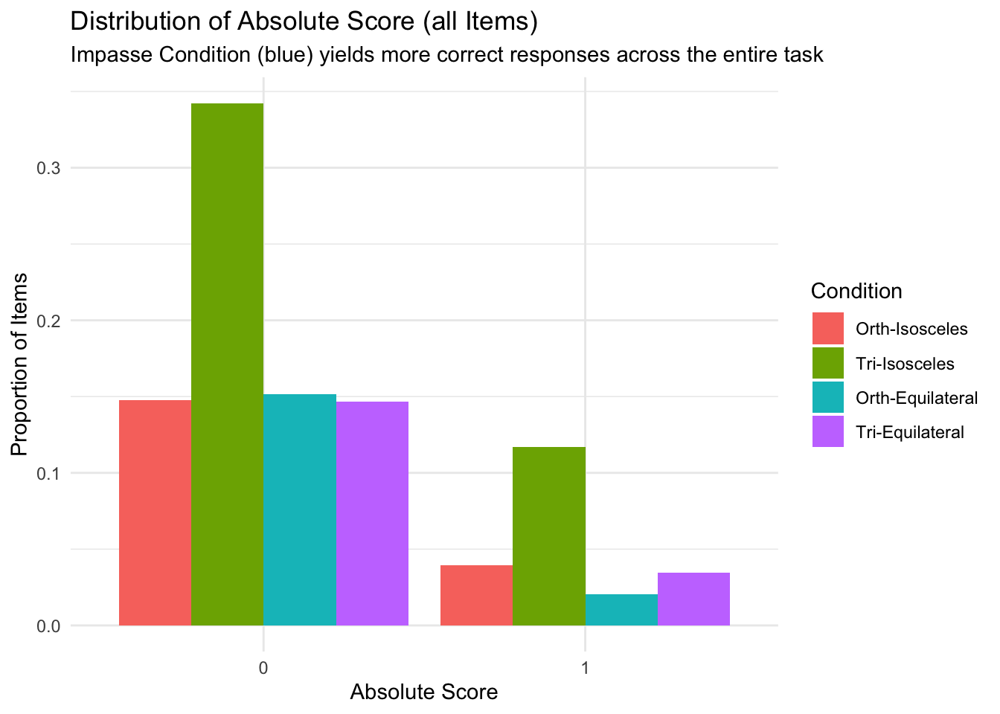
CODE
#DISTRIBUTION ABSOLUTE SCORE BY ITEMgf_props(~score_niceABS, fill =~pretty_condition, position =position_dodge(), data = df) %>%gf_facet_grid(pretty_condition~q) +labs( x ="Absolute Score", title ="Distribution of Absolute Score (by Item)",subtitle ="Impasse Condition (blue) yields more correct responses on each item",y ="Proprition of Subjects") +scale_fill_discrete(name ="Condition") +theme_minimal()
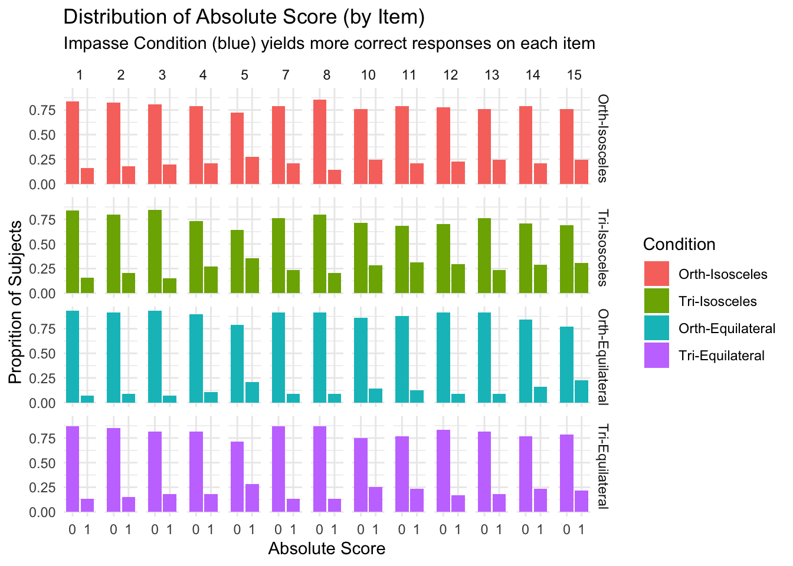
CODE
#DISTRIBUTION ABSOLUTE SCORE BY SUBJECTgf_props(~s_NABS, fill =~pretty_condition, position =position_dodge(), data = df_subjects) %>%gf_facet_wrap(~pretty_condition)+labs( x ="Total Absolute Score",title ="Distribution of Total Absolute Score (by Subject)",subtitle ="Impasse Condition (blue) yields higher total absolute scores",y ="Proportion of Subjects") +scale_fill_discrete(name ="Condition") +theme_minimal() +theme(legend.position ="blank")
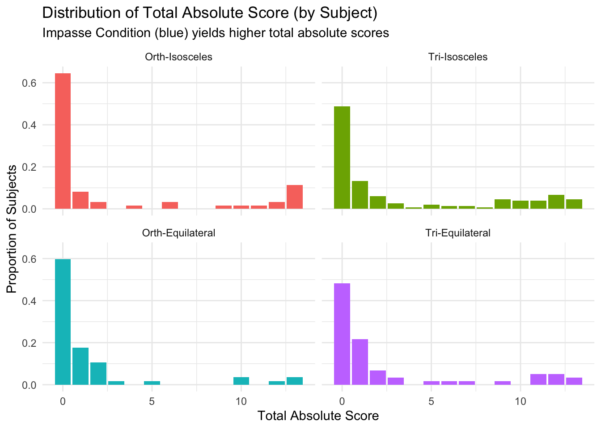
CODE
#DISTRIBUTION ABSOLUTE SCORE TEST PHASEgf_props(~item_test_NABS, fill =~pretty_condition, data = df_subjects) %>%gf_facet_wrap(~pretty_condition) +labs( x ="Absolute Score in TEST Phase", title ="Distribution of TEST PHASE Absolute Score (all Items)",subtitle =paste(""),y ="Proportion of Items") +scale_fill_discrete(name ="Condition") +theme_minimal()
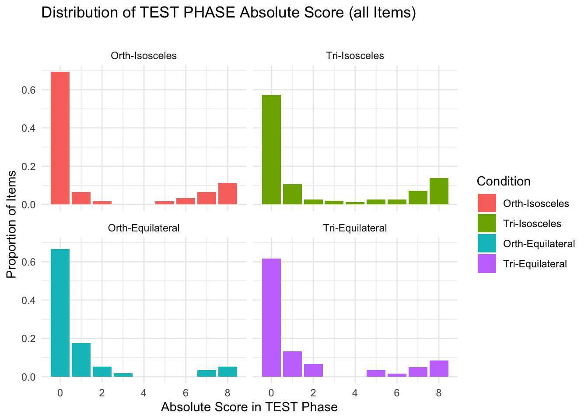
Scaled Score
CODE
options(repr.plot.width =9, repr.plot.height =12)#DISTRIBUTION SCALED SCORE FULL TASKgf_props(~score_SCALED, fill =~pretty_condition, position =position_dodge(), data = df) +labs( x ="Scaled Score", title ="Distribution of Scaled Score (all Items)",subtitle ="Impasse Condition (blue) yields higher scaled scores across the entire task",y ="Proportion of Items") +scale_fill_discrete(name ="Condition") +theme_minimal()
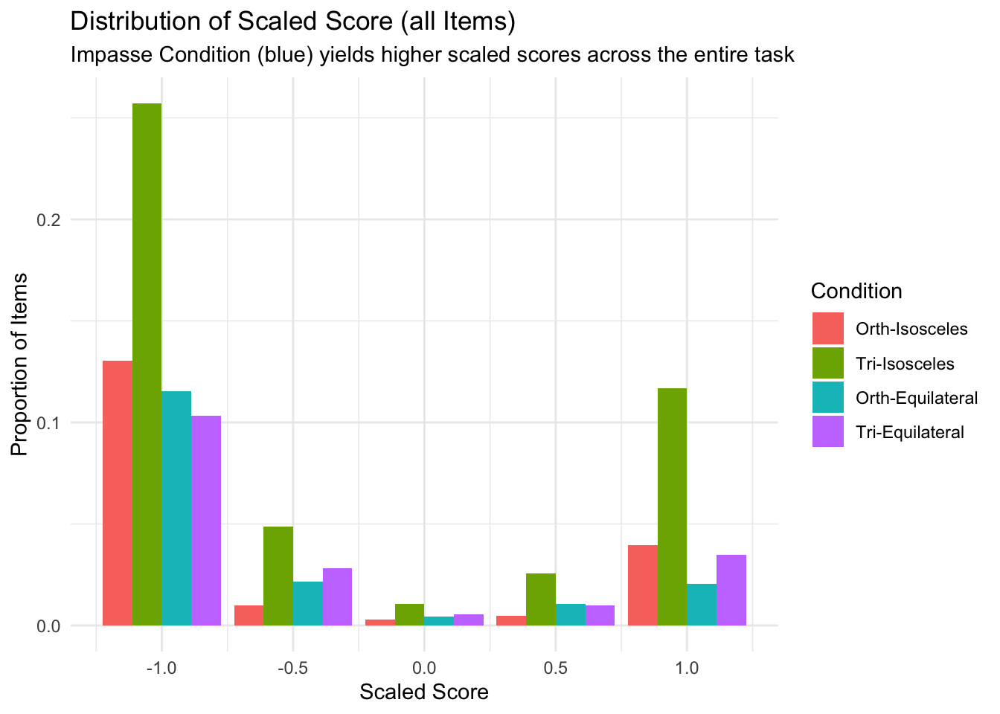
CODE
#DISTRIBUTION SCALED SCORE BY ITEMgf_props(~score_SCALED, fill =~pretty_condition, position =position_dodge(), data = df) %>%gf_facet_grid(q~pretty_condition) +labs( x ="Scaled Score", title ="Distribution of Scaled Score (by Item)",subtitle ="Impasse Condition (blue) yields higher scaled scores on each item",y ="Proportion of Subjects") +scale_fill_discrete(name ="Condition") +scale_y_continuous(breaks=c(0,0.5)) +theme_minimal() +theme(legend.position="blank")
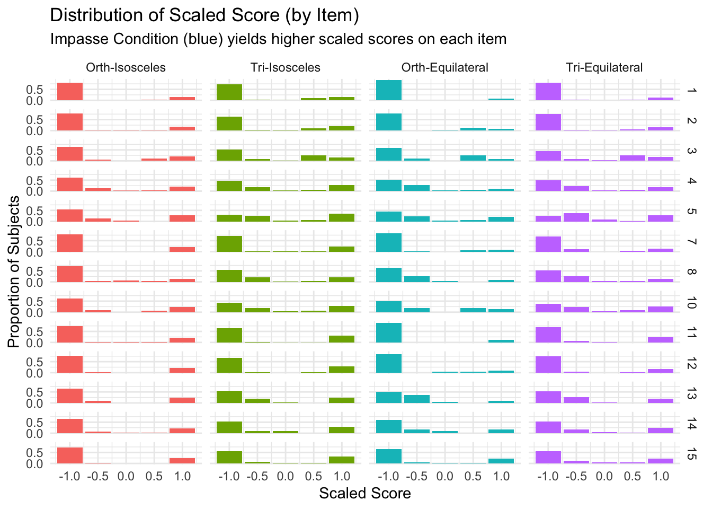
CODE
#DISTRIBUTION SCALED SCORE BY SUBJECTgf_props(~s_SCALED, fill =~pretty_condition, data = df_subjects) %>%gf_facet_grid(pretty_condition ~. )+labs( x ="Total Scaled Score", title ="Distribution of Total Scaled Score (by Subject)",subtitle ="Impasse Condition (blue) yields higher cumulative scaled scores",y ="Number of Subjects") +scale_fill_discrete(name ="Condition") +theme_minimal()
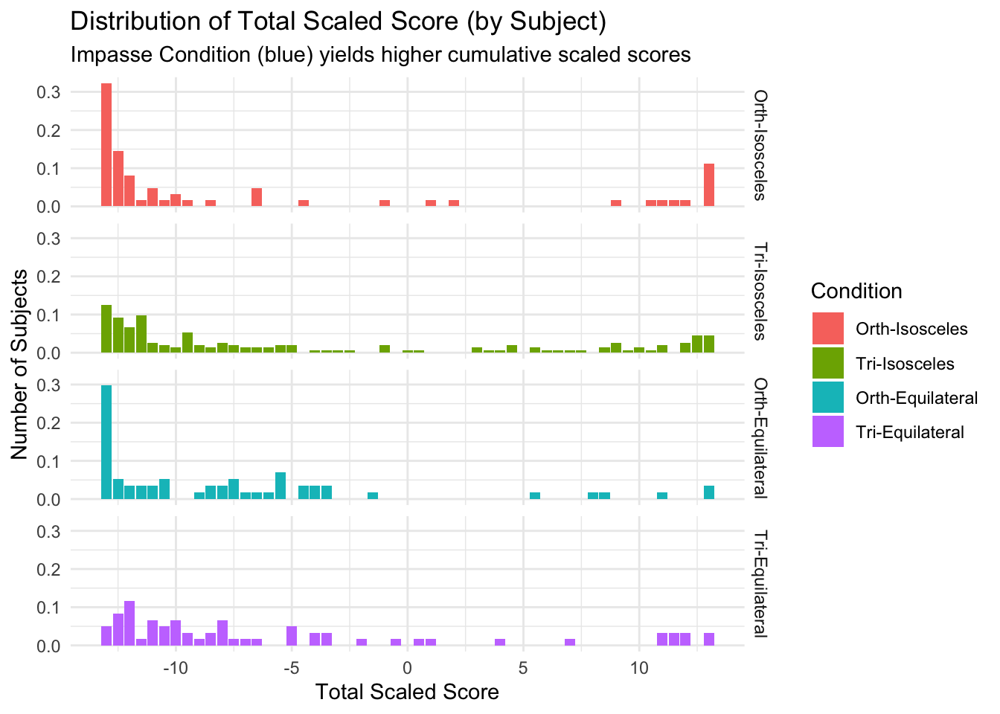
CODE
#DISTRIBUTION SCALED SCORE TEST PHASEgf_histogram(~item_test_SCALED, fill =~pretty_condition, data = df_subjects) %>%gf_facet_wrap(~pretty_condition) +labs( x ="Scaled Score in TEST Phase", title ="Distribution of TEST PHASE Scaled Score (all Items)",subtitle =paste(""),y ="Proportion of Items") +scale_fill_discrete(name ="Condition") +theme_minimal()
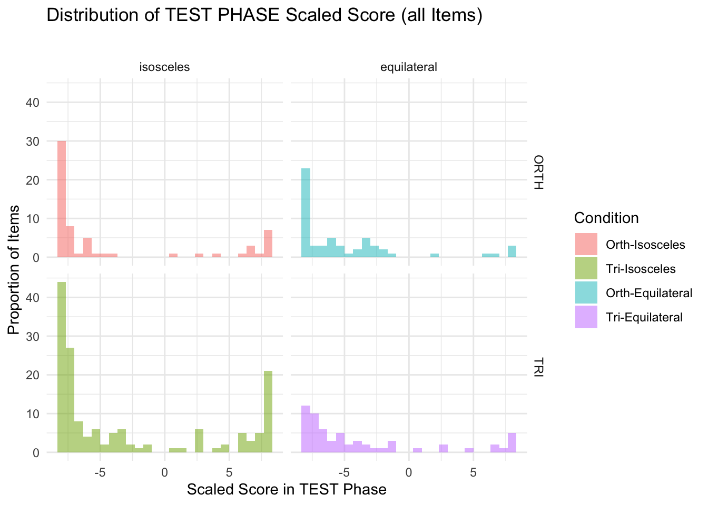
CODE
#QUICK PEEKggbetweenstats( data = df_subjects,x = pretty_condition, y = s_SCALED,type ="non-parametric",title ="Total Scaled Score [directional test]")
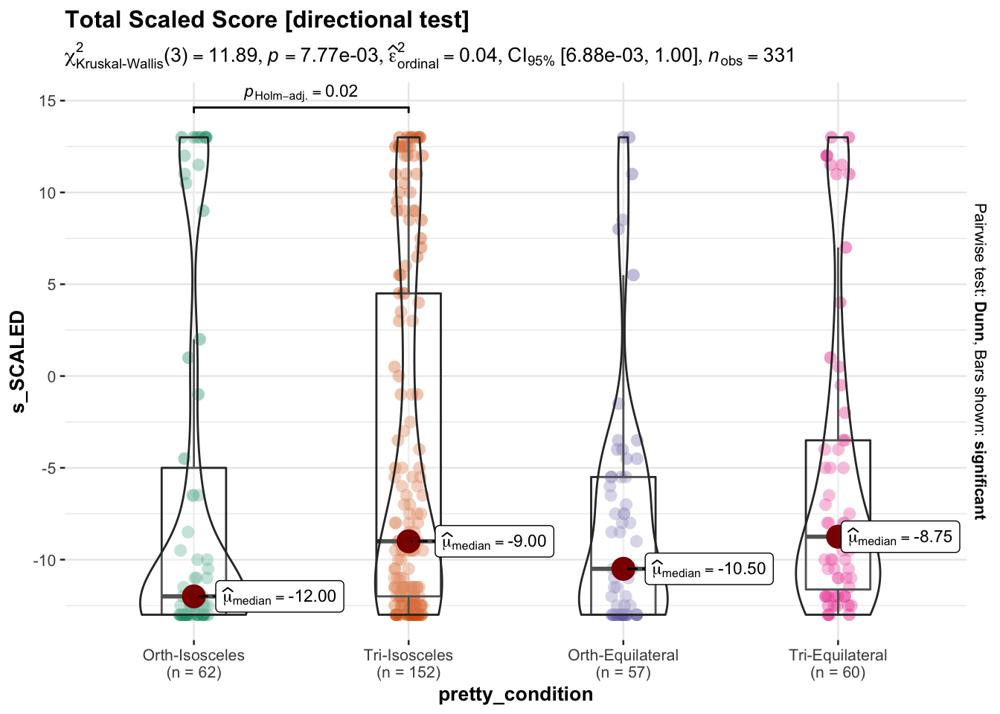
Interpretations
CODE
#DISTRIBUTION OF INTERPRETATIONgf_props(~pretty_interpretation, fill =~pretty_condition, data = df) %>%gf_facet_grid( pretty_condition ~ ., labeller = label_both) +labs( title ="Distribution of Interpretations (across Task)",x ="Graph Interpretation",y ="Proportion of Responses",subtitle ="Impasse condition (blue) yields fewer Orthogonal and more Triangular responses") +theme_minimal() +theme(legend.position ="blank")
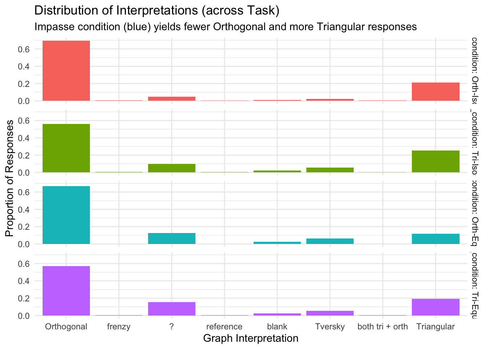
CODE
#DISTRIBUTION OF INTERPRETATION ACROSS ITEMSgf_propsh(~ pretty_interpretation, fill =~pretty_condition, data = df) %>%gf_facet_grid( pretty_condition~q) +labs( title ="Distribution of Interpretations (by Item)",subtitle ="Impasse condition (blue) yields more Triangular responses on each question",y ="Interpretation", x ="Proportion of Subjects") +theme_minimal() +theme(legend.position ="blank")
CODE
#DISTRIBUTION OF INTERPRETATION TYPE ACROSS ITEMSgf_propsh(~ high_interpretation, fill =~pretty_condition, data = df) %>%gf_facet_grid( pretty_condition~q) +labs( title ="Distribution of Interpretations (by Item)",subtitle ="Impasse condition (blue) yields more positive trending responses on each question",y ="Interpretation", x ="Proportion of Subjects") +theme_minimal() +theme(legend.position ="blank")
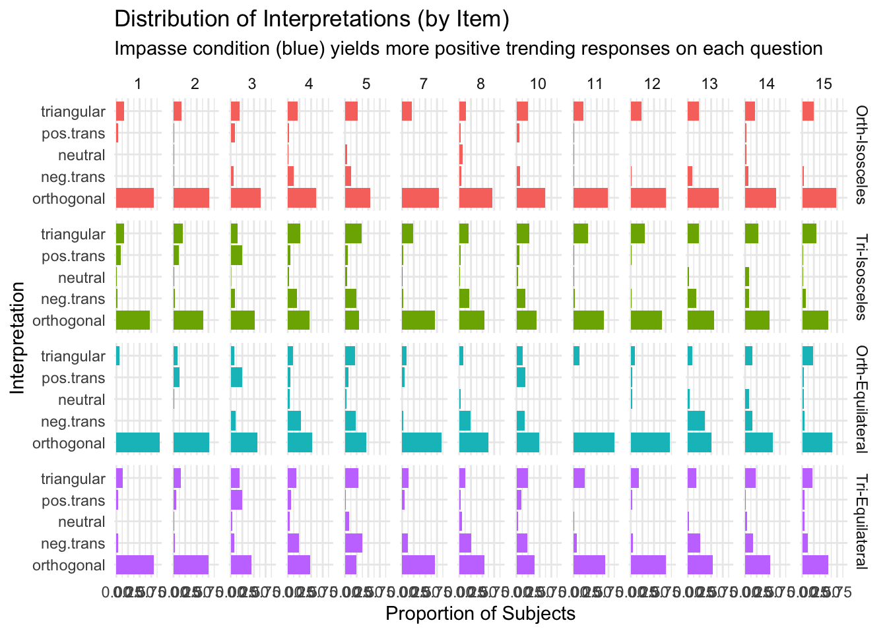
CODE
ggbarstats( data = df, x = score_STATE, y = pretty_condition)
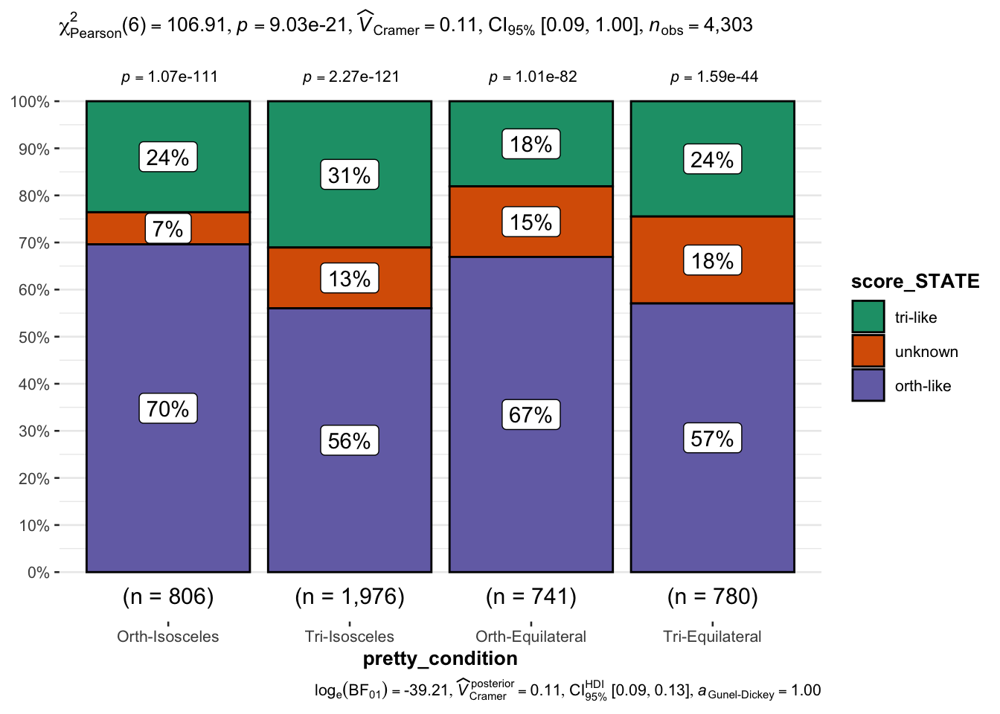
CODE
ggbarstats( data = df, x = high_interpretation, y = pretty_condition)
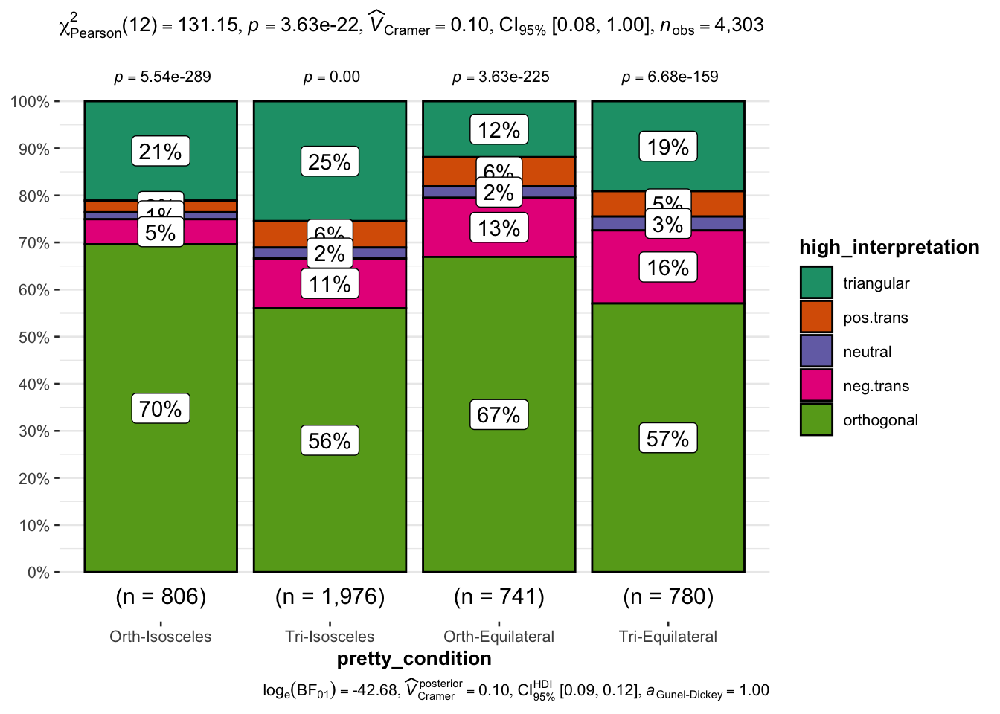
Progress over Task
CODE
#VISUALIZE progress over time ABSOLUTE score ggplot(data = df_absolute_progress, aes(x = question, y = score, group = subject, alpha =0.01, color = pretty_condition)) +geom_line(position=position_jitter(w=0.15, h=0.15), size=0.1) +facet_wrap(~pretty_condition) +labs (title ="Cumulative Absolute Score over sequence of task", x ="Question" , y ="Cumulative Absolute Score") +scale_x_continuous(breaks =c(1,2,3,4,5,6,7,8,9,10,11,12,13)) +theme_minimal() +theme(legend.position ="blank")
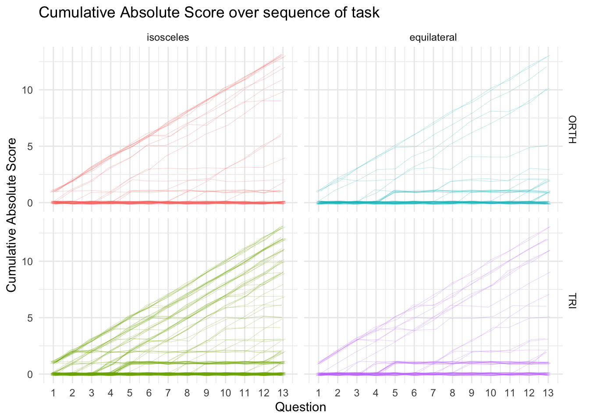
CODE
#VISUALIZE progress over time SCALED score ggplot(data = df_scaled_progress, aes(x = question, y = score, group = subject, alpha =0.01, color = pretty_condition)) +geom_line(position=position_jitter(w=0.15, h=0.15), size=0.1) +facet_wrap(~pretty_condition) +labs (title ="Cumulative Scaled Score over sequence of task", x ="Question" , y ="Cumulative Scaled Score") +scale_x_continuous(breaks =c(1,2,3,4,5,6,7,8,9,10,11,12,13)) +theme_minimal() +theme(legend.position ="blank")
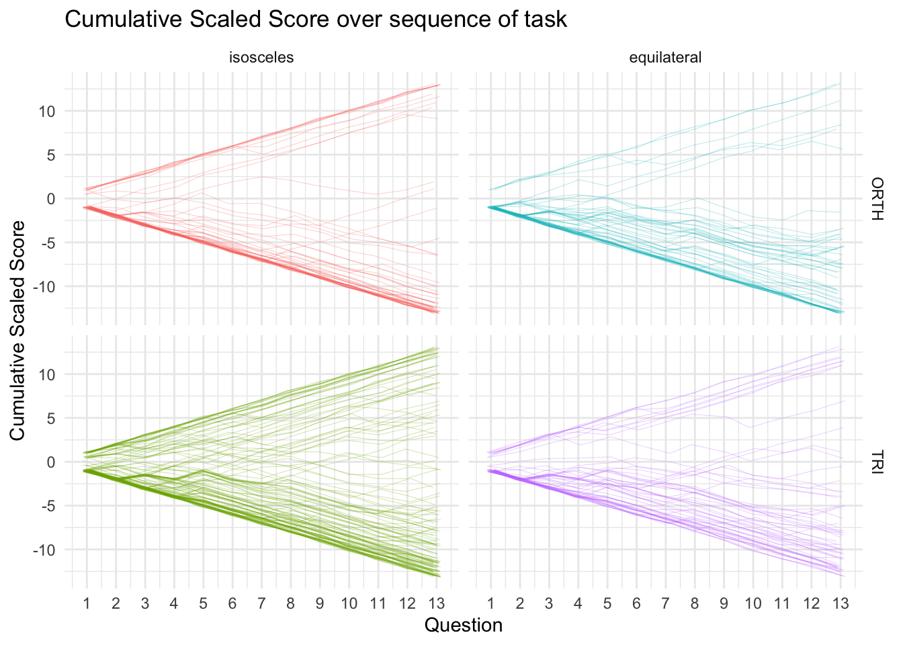
Interpretation Subscores
CODE
gf_density(~ s_TRI, fill =~pretty_condition, data = df_subjects) %>%gf_facet_wrap( ~ pretty_condition) +labs( title ="Distribution of Total Triangular Score",subtitle ="Impasse shifts density toward higher Triagular scores",x ="Item Triangular Score", y ="Proportion of Subjects") +theme_minimal() +theme(legend.position ="blank")
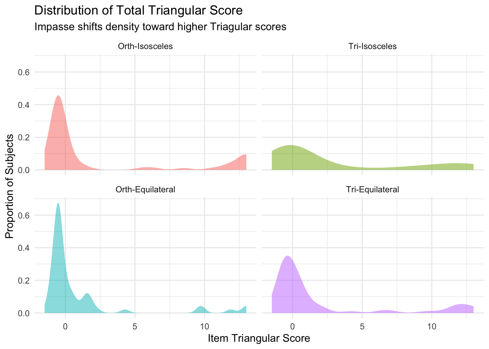
CODE
gf_density(~ s_ORTH, fill =~pretty_condition, data = df_subjects) %>%gf_facet_wrap( ~ pretty_condition) +labs( title ="Distribution of Total Orthogonal Score",subtitle ="Impasse shifts density toward lower Orthogonal scores",x ="Item Orthogonal Score", y ="Proportion of Subjects") +theme_minimal() +theme(legend.position ="blank")
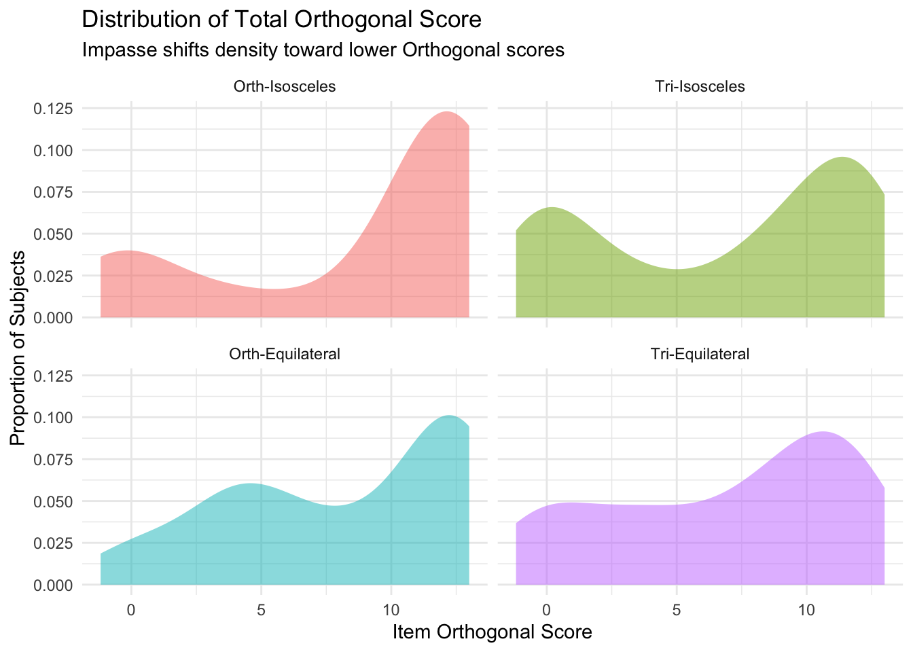
CODE
gf_density(~ s_TVERSKY, fill =~pretty_condition, data = df_subjects) %>%gf_facet_wrap( ~ pretty_condition) +labs( title ="Distribution of Total Tversky Score",subtitle ="Impasse shifts density toward higher Tversky scores",x ="Item Orthogonal Score", y ="Proportion of Subjects") +theme_minimal() +theme(legend.position ="blank")
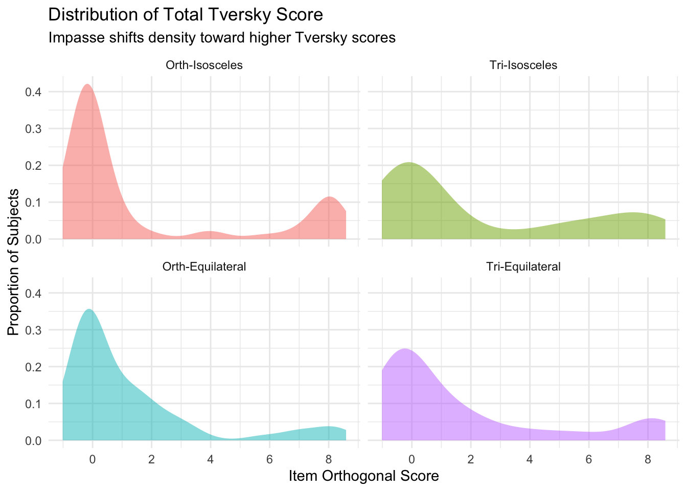
CODE
gf_histogram(~ s_SATISFICE, fill =~pretty_condition, data = df_subjects) %>%gf_facet_wrap( ~ pretty_condition) +labs( title ="Distribution of Total Satisfice Score",subtitle ="Satisficing only occurs in impasse, when no orthogonal response is available",x ="Item Orthogonal Score", y ="Proportion of Subjects") +theme_minimal() +theme(legend.position ="blank")
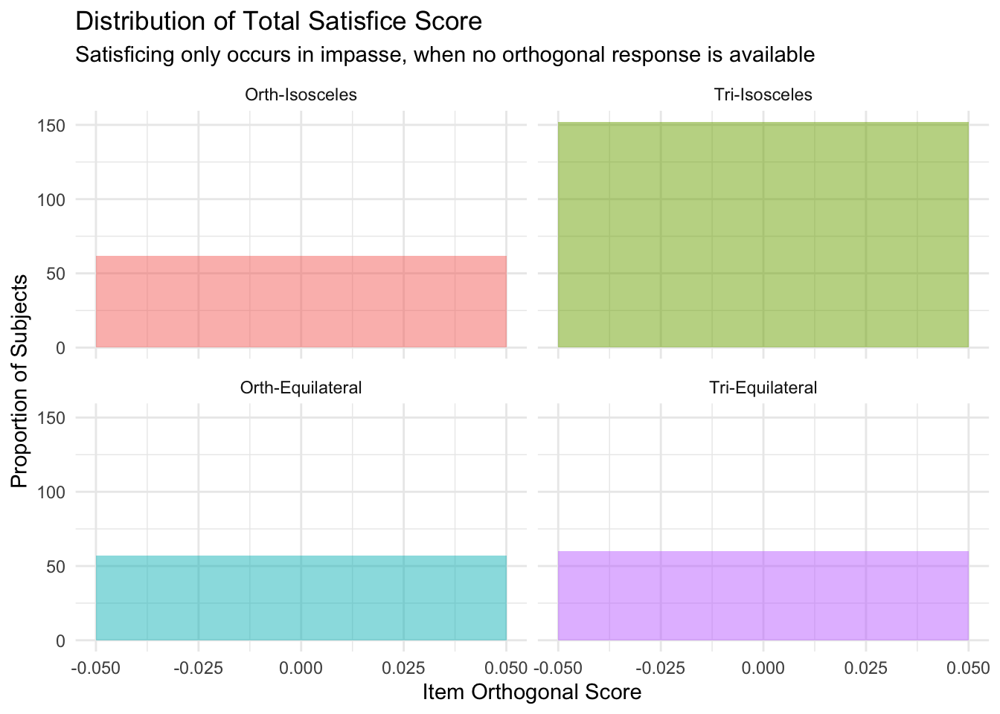
PEEK
CODE
ggbetweenstats( data = df_subjects,x = pretty_condition, y = s_NABS,type ="non-parametric",title ="Total Absolute Score [directional test]")
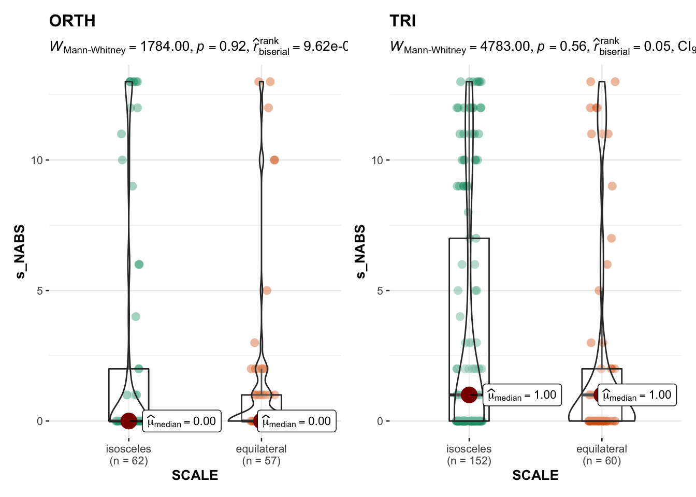
CODE
ggbarstats( data = df_items,x = score_niceABS, y = pretty_condition,type ="non-parametric",title ="Total Absolute Score [directional test]")
CODE
ggbarstats( data = df_items,x = interpretation, y = pretty_condition,type ="non-parametric",title ="Interpretation [directional test]")
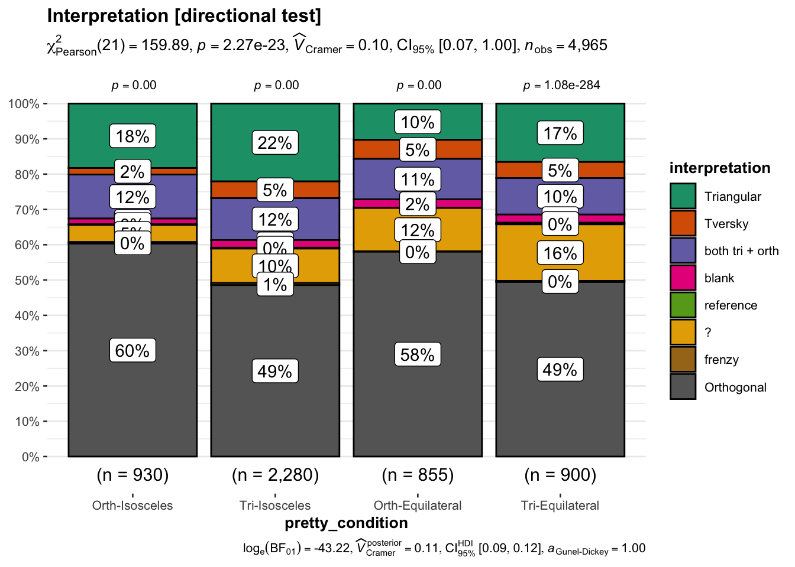
CODE
ggbarstats( data = df_items,x = score_STATE, y = pretty_condition,type ="non-parametric",title ="State [directional test]")
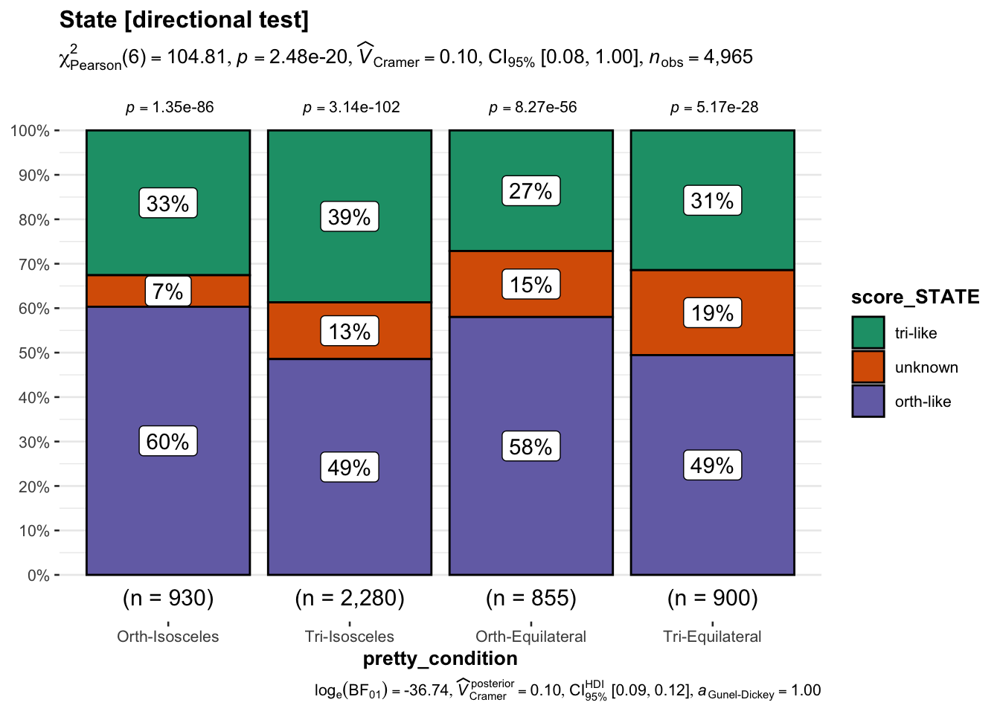
EXPLORE RESPONSES
In this section we explore responses given by participants to each particular item in the graph comprehension task, indicate how each response was scored, and what interpretation of the graph is indicated by different responses.
CODE
gf_dhistogram(~ score_niceABS, fill =~condition, data = df_items ) %>%gf_facet_grid( condition ~ ., labeller = label_both) +labs( x ="Scaled Item Score", title ="Distribution of Scaled Scores | Q1 ") +theme_minimal() +theme(legend.position ="blank")
CODE
gf_props(~interpretation, fill =~condition, data = df_items ) %>%gf_facet_grid( condition ~ ., labeller = label_both) +labs( x ="Interpretation", title ="Distribution of Interpretations | Q1 ") +theme_minimal() +theme(legend.position ="blank")
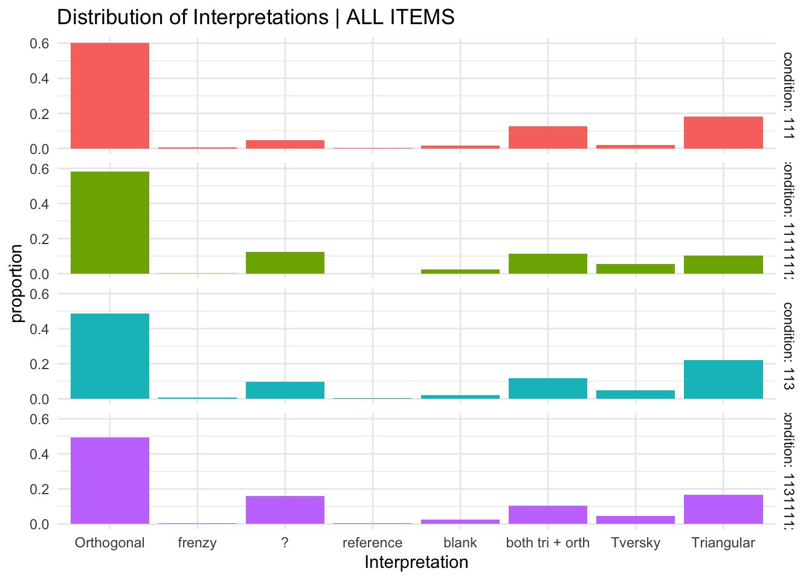
Scaffold Phase
The first five questions constitute the ‘scaffold’ (or learning) phase, where participants see a different version of the stimulus (specifically a different dataset is visualized) invoking a different experimental condition.
Question #1
CODE
gf_dhistogram(~ score_niceABS, fill =~condition, data = df_items %>%filter(q ==1)) %>%gf_facet_grid( condition ~ ., labeller = label_both) +labs( x ="Scaled Item Score", title ="Distribution of Scaled Scores | Q1 ") +theme_minimal() +theme(legend.position ="blank")
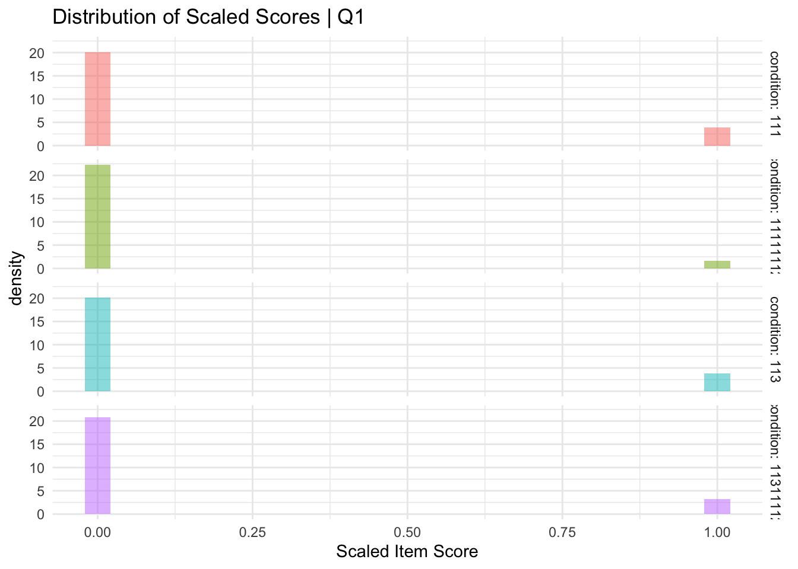
CODE
gf_props(~interpretation, fill =~condition, data = df_items %>%filter(q ==1)) %>%gf_facet_grid( condition ~ ., labeller = label_both) +labs( x ="Interpretation", title ="Distribution of Interpretations | Q1 ") +theme_minimal() +theme(legend.position ="blank")
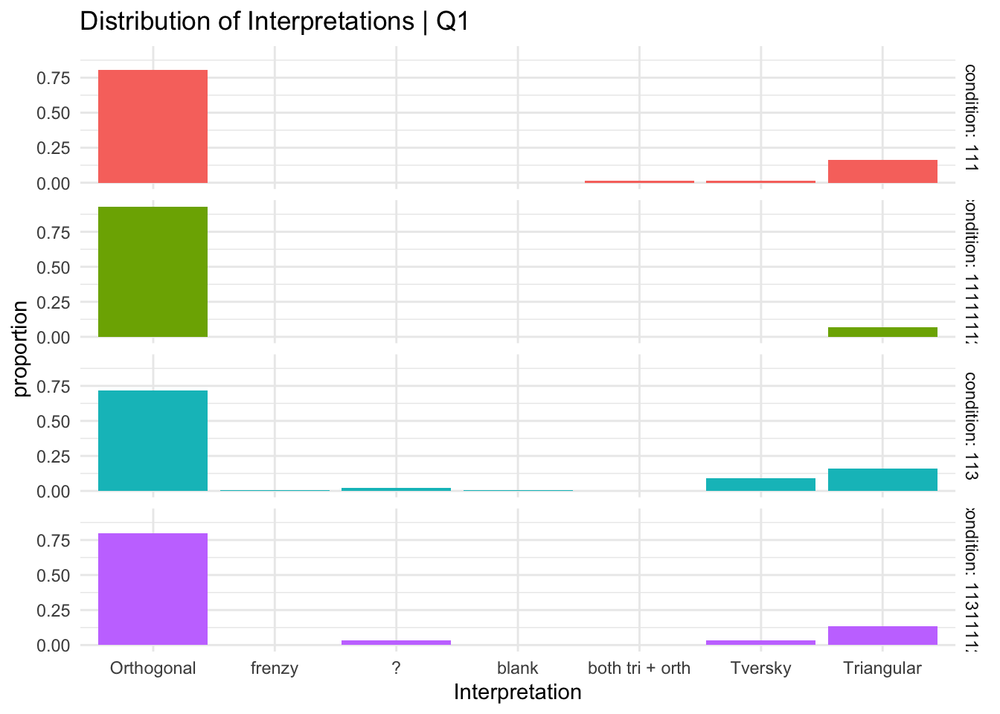
We start by exploring the range of response options checked by participants on Question 1, for those assigned to the control (non-impasse) condition (condition = 111).
Answer Key | Q1 Control Condition : Which shift(s) start at 11 am?
interpretation
answer
not penalized
Triangular
F
Z
Orthgonal
A
OI
Satisficing [left]
Satisficing [right]
Tversky [maximal]
CF
Z
Tversky [start diagonal]
F
Z
Tversky [end diagonal]
C
Tversky [duration line]
Note: 15 response options: AIKGXJDBCHUZOFE
Here we summarize the distinct response options given by participants on this item. Each letter in response indicates a checkbox selected by the participant (See Figure 21.1 ). n indicates the number of participants who gave this response, while interpretation indicates the graph interpretation most consistent with that response. At the right of this table are the Absolute, followed by Partial Credit subscores for each response. NA indicates that there is no score calculated (occurs when there is no subset of response options that accord with that interpretation for this question).
Notice that for this Question, the Triangular answer is the same as the Tversky [start diagonal] answer. In fact, for most questions, one of the Tversky sub-types will match the correct response.
If the subject calculates end time for each data point (using duration on the y axis), they find that an (incorrect) projection of point U ‘end time’ intersects with the (incorrect) orthogonal projection of 4:00PM.
Alternatively, some subjects selected points E and D which intersect with an orthogonal projection from 4:00pm. We call this an ’orthogonal-lines connect” strategy, because it (incorrectly) adapts the orthogonal procedure for finding events that start at 4:00pm in order to find those that end at 4:00pm, thus selecting any data point with an orthogonal intersection with 4:00pm.
Question #5
CODE
gf_dhistogram(~ score_niceABS, fill =~condition, data = df_items %>%filter(q ==5)) %>%gf_facet_grid( condition ~ ., labeller = label_both) +labs( x ="Scaled Item Score", title ="Distribution of Scaled Scores | Q5 ") +theme_minimal() +theme(legend.position ="blank")
CODE
gf_props(~interpretation, fill =~condition, data = df_items %>%filter(q ==5)) %>%gf_facet_grid( condition ~ ., labeller = label_both) +labs( x ="Interpretation", title ="Distribution of Interpretations | Q5 ") +theme_minimal() +theme(legend.position ="blank")
Finally, we export the scores for each item (df_items) and summarized over subjects (df_subjects), as well as cumulative progress dataframes (df_absolute_progress, df_scaled_progress)
CODE
# imac = "/Users/amyraefox/Code/SGC-Scaffolding_Graph_Comprehension/SGC-X/ANALYSIS/MAIN"# setwd(imac)#SAVE FILESwrite.csv(df_subjects,"analysis/SGC4D/data/2-scored-data/sgc4d_scored_participants.csv", row.names =FALSE)write.csv(df_items,"analysis/SGC4D/data/2-scored-data/sgc4d_scored_items.csv", row.names =FALSE)write.csv(df_absolute_progress,"analysis/SGC4D/data/2-scored-data/sgc4d_absolute_progress.csv", row.names =FALSE)write.csv(df_scaled_progress,"analysis/SGC4D/data/2-scored-data/sgc4d_scaled_progress.csv", row.names =FALSE)#SAVE R Data Structures#export R DATA STRUCTURES (include codebook metadata)rio::export(df_subjects, "analysis/SGC4D/data/2-scored-data/sgc4d_scored_participants.rds") # to R data structure filerio::export(df_items, "analysis/SGC4D/data/2-scored-data/sgc4d_scored_items.rds") # to R data structure file
Source Code
---subtitle: 'Study SGC4D | 2 Response Scoring'---\newpage# Response Scoring {#sec-SGC4D-scoring}```{r}#| label: SETUP#| warning : false#| message : falseoptions(scipen=1, digits=3)library(kableExtra) #printing tables library(ggformula) #quick graphslibrary(pbapply) #progress bar and time estimate for *apply fnslibrary(Hmisc) # %nin% operatorlibrary(ggstatsplot) #plots-n-statslibrary(statsExpressions) # expressions for stats results on plots library(tidyfst) #mutate_whenlibrary(tidyverse) #ALL THE THINGS```## SCORE SGC DATATo review the strategy behind Multiple Response scoring for the SGC project, refer to section @sec-scoring.In SGC we are fundamentally interested in understanding how a participant interprets the presented graph (stimulus). The **graph comprehension task** asks them to select the data points in the graph that meet the criteria posed in the question. To assess a participant's performance, for each question (q=15) we will calculate the following scores:*An overall, strict score:*\1. **Absolute Score** : using dichotomous scoring referencing true (Triangular) answer. (see 1.2)*Sub-scores, for each alternative graph interpretation*\2. **Triangular Score** : using partial scoring \[-1/q, +1/p\] referencing true (Triangular) answer key.3\. **Orthogonal Score** : using partial scoring \[-1/q, +1/p\] referencing (incorrect Orthogonal) answer key.Based on prior observational studies where we observed emergence of other alternative interpretations (i.e. transitional interpretations) we also calculate subscores for these alternatives.4\. **Tversky Score** : using partial scoring \[-1/q, +1/p\] referencing (incorrect connecting-lines strategy) answer key. 5. **Satisficing Score** : using partial scoring \[-1/q, +1/p\] referencing (incorrect satisficing strategy) answer key.### Prepare Answer Keys {#sec-SGC4D-keys}We start by importing three answer keys: (1) Q1 - Q5 \[control condition\], (2) Q1-Q5 \[impasse condition\], (3) Q6-15. Separate answer keys by condition are required for Q1-Q5 because the stimuli for each condition visualize a different underlying dataset (i.e. the graphs show datapoints in different positions). Q6-Q15 are identical across conditions. Each answer key includes a row for each question, and a column defining the subset of response options that correspond to different graph interpretations.```{r}#| label: IMPORT-KEYS#| warning: false#| message: false# #HACK WD FOR LOCAL RUNNING?#imac = "/Users/amyraefox/Code/SGC-Scaffolding_Graph_Comprehension/SGC-X/ANALYSIS/MAIN"#setwd(imac)#SAVE KEYS FOR FUTURE USEkeys_raw <-read_csv("analysis/utils/keys/parsed_keys/keys_raw")keys_orth <-read_csv("analysis/utils/keys/parsed_keys/keys_orth")keys_tri <-read_csv("analysis/utils/keys/parsed_keys/keys_tri")keys_both <-read_csv("analysis/utils/keys/parsed_keys/keys_both")keys_satisfice_left <-read_csv("analysis/utils/keys/parsed_keys/keys_satisfice_left")keys_satisfice_right <-read_csv("analysis/utils/keys/parsed_keys/keys_satisfice_right")keys_tversky_duration <-read_csv("analysis/utils/keys/parsed_keys/keys_tversky_duration")keys_tversky_end <-read_csv("analysis/utils/keys/parsed_keys/keys_tversky_end")keys_tversky_max <-read_csv("analysis/utils/keys/parsed_keys/keys_tversky_max")keys_tversky_start <-read_csv("analysis/utils/keys/parsed_keys/keys_tversky_start")```### Calculate Subscores {#sec-SGC4D-subscores}Next, we import the item-level response data. For each row in the item level dataset (indicating the response to a single question-item for a single subject), we compare the raw response `df_items$response` with the answer keys in each interpretation (e.g. `keys_orth`, `keys_tri`, etc...), then using those sets, determine the number of correctly selected items(p) and incorrectly selected items (q), which in turn are used to calculate partial\[-1/q, +1/p\] scores for each interpretation. The resulting scores are then stored on each item in `df_items`, and can be used to determine which graph interpretation the subject held.Specifically, the following scores are calculated for each item:**Interpretation Subscores**- `score_TRI` How consistent is the response with the **triangular**interpretation?- `score_ORTH` How consistent is the response with the **orthogonal**interpretation?- `score_BOTH` How consistent is the response with **both** the orthogonal and triangular interpretations?- `score_SATISFICE` is calculated by taking the maximum value of : - `score_SAT_left` How consistent is the response with the **(left side) Satisficing** interpretation? - `score_SAT_right` How consistent is the response with the **(right side) Satisficing** interpretation- `score_TVERSKY` is calculated by taking the maximum value of: - `score_TV_max` How consistent is the response with the **(maximal) Tversky** interpretation? - `score_TV_start` How consistent is the response with the **(start-time) Tversky** interpretation? - `score_TV_end` How consistent is the response with the **(end-time) Tversky** interpretation? - `score_TV_duration` How consistent is the response with the **(duration) Tversky** interpretation?- `score_REF` Did the response select only the **reference point**?**Absolute Scores**- `score_ABS` Is the response strictly correct? (triangular interpretation)- `score_niceABS` Is the response strictly correct? (triangular interpretation, not penalizing ref points). This is a more generous version of the Absolute score that does not penalize the participant if in addition to the correct answer *in addition to* they also select the data point referenced in the question.```{r}#| label: IMPORT-ITEMS#HACK WD FOR LOCAL RUNNING?# imac = "/Users/amyraefox/Code/SGC-Scaffolding_Graph_Comprehension/SGC-X/ANALYSIS/MAIN"# setwd(imac)#backup <- read_rds('analysis/SGC4D/data/1-study-level/sgc4d_items.rds') #for troubleshooting onlydf_items <-read_rds('analysis/SGC4D/data/1-study-level/sgc4d_items.rds')#ADD TEMP IMPASSE COLUMNdf_items <- df_items %>%mutate(IMPASSE =substr(condition,2,2),IMPASSE =recode_factor(IMPASSE, "1"="none", "2"="IMPASSE"))``````{r}#| label: IMPORT-SCORING-FUNCTIONS# #HACK WD FOR LOCAL RUNNING?# imac = "/Users/amyraefox/Code/SGC-Scaffolding_Graph_Comprehension/SGC-X/ANALYSIS/MAIN"# setwd(imac)source("analysis/utils/scoring.R")```*note: this cell takes approximately 30 minutes to run on the full df_items dataframe with 4950 records*```{r}#| label: CALCULATE-SCORES-MAPPLY#| cache: true#RUN THIS <OR> THE CALCULATE-SCORES-FORLOOP [not both]# backup <- df_items# df_items <- backup %>% sample_n(200)#ALPHEBETIZE RESPONSEdf_items$response =pbmapply(reorder_inplace, df_items$response)#STRATEGY PARTIAL-SUBSCORESdf_items$score_TRI =pbmapply(calc_subscore, df_items$q, df_items$IMPASSE, df_items$response, MoreArgs =list(keyframe = keys_tri))df_items$score_ORTH =pbmapply(calc_subscore, df_items$q, df_items$IMPASSE, df_items$response, MoreArgs =list(keyframe = keys_orth))df_items$score_BOTH =pbmapply(calc_subscore, df_items$q, df_items$IMPASSE, df_items$response, MoreArgs =list(keyframe = keys_both))df_items$score_SAT_left =pbmapply(calc_subscore, df_items$q, df_items$IMPASSE, df_items$response, MoreArgs =list(keyframe = keys_satisfice_left))df_items$score_SAT_right =pbmapply(calc_subscore, df_items$q, df_items$IMPASSE, df_items$response, MoreArgs =list(keyframe = keys_satisfice_right))df_items$score_TV_max =pbmapply(calc_subscore, df_items$q, df_items$IMPASSE, df_items$response, MoreArgs =list(keyframe = keys_tversky_max))df_items$score_TV_start =pbmapply(calc_subscore, df_items$q, df_items$IMPASSE, df_items$response, MoreArgs =list(keyframe = keys_tversky_start))df_items$score_TV_end =pbmapply(calc_subscore, df_items$q, df_items$IMPASSE, df_items$response, MoreArgs =list(keyframe = keys_tversky_end))df_items$score_TV_duration =pbmapply(calc_subscore, df_items$q, df_items$IMPASSE, df_items$response, MoreArgs =list(keyframe = keys_tversky_duration))#SPECIAL ABSOLUTE SUBSCORESdf_items$score_REF =pbmapply(calc_refscore, df_items$q, df_items$response)#OLD score_BOTH... new one is above (explicitly in key)# df_items$score_BOTH = as.integer((df_items$score_TRI == 1) & (df_items$score_ORTH ==1))#ABSOLUTE SCORESdf_items$score_ABS =as.integer(df_items$correct) df_items$score_niceABS <-as.integer((df_items$score_TRI ==1)) #tri doesn't penalize ref or ve-area```### Derive Interpretation {#sec-SGC4D-interpretation}Finally, we use the interpretation subscores to classify the response as a particular interpretation. This classification algorithm : (1) First decides if the response matches one or more 'special' situations (blank response, reference point response, both ORTH and TRI) (2) If response doesn't match a special situation, it compares the individual subscores, and subscores and decides if they are *discriminant* (i.e. are the scores different enough to make a prediction). A discriminant threshold of 0.5pts (on a scale from -1 to +1 is used) (2) If the variance in subscores surpasses the threshold, the interpretation is classified based on the highest subscore (TRIANGULAR, ORTHOGONAL, TVERSKY, SATISFICE) (3) If the variance does not surpass the threshold, the interpretation is labelled as "?", indicating it cannot be classified, and is of an unknown interpretation.The final output is called `interpretation`.```{r}#| label: DERIVE-INTERPRETATION#| cache: true#stoopid extra copying for troubleshooting safetytemp <- df_items #%>% head(16) %>% tail(1)temp <-derive_interpretation(temp)df_items <- temp```### ? SPECIAL EXCEPTIONSLook for special exceptions (essentially pass through cases) that are missed by the threshold partial p calculations, but fit particular interpretations. (ie. a clearly tversky interpretation that only includes 1 or 2 of the 3 possible options)Look for special exceptions (essentially pass through cases) that are missed by the threshold partial p calculations, but fit particular interpretations. (ie. a clearly tversky interpretation that only includes 1 or 2 of the 3 possible options)ALSO reconciles issues when interpetation == triangular but scoreniceabs = 0```{r}# #temp setup for protection# backup <- df_itemstemp <- df_items %>%mutate(override ="")## CONTROL. Q==1. "FK" derives as 'TRI', should be tversky start#codes as unknown bc there are 2 other along that line, but A is the closest (shortcut)temp <- temp %>%mutate_when( (q==1) & (IMPASSE =="none") & (response =="FK"),tv_type ="score_TV_start",int2 ="Tversky", #override from ?interpretation ="Tversky", #override from ?high_interpretation ="pos.trans",override ="TRI")## IMPASS Q==2. "EK" derives as 'TRI', should be tversky MAXtemp <- temp %>%mutate_when( (q==2) & (IMPASSE =="IMPASSE") & (response =="EK"),tv_type ="score_TV_max",int2 ="Tversky", #override from TRIinterpretation ="Tversky", #override from ?high_interpretation ="pos.trans",override ="?")## CONTROL. Q==3. "A" derives as 'unknown', should be tversky duration#codes as unknown bc there are 2 other along that line, but A is the closest (shortcut)temp <- temp %>%mutate_when( (q==3) & (IMPASSE =="none") & (response =="A"),tv_type ="score_TV_duration",int2 ="Tversky", #override from ?interpretation ="Tversky", #override from ?high_interpretation ="pos.trans",override ="?")## CONTROL Q==3 "AF" derives as TRI. hardcode as "both"temp <- temp %>%mutate_when( (q==3) & (IMPASSE =="none") & (response =="AF"),int2 ="both tri + orth", #override from TRIinterpretation ="both tri + orth", #override from TRIhigh_interpretation ="pos.trans", #override from triangularoverride ="Triangular")## CONTROL Q==3 "EFK" derives as TRI. hardcode as "unknown"temp <- temp %>%mutate_when( (q==3) & (IMPASSE =="none") & (response =="EFK"),int2 ="?", #override from TRIinterpretation ="?", #override from TRIhigh_interpretation ="neg.trans", #override from triangularoverride ="Triangular")## CONTROL Q==3 "FG" derives as TRI. hardcode as "TVERSKY-DURATION"temp <- temp %>%mutate_when( (q==3) & (IMPASSE =="none") & (response =="FG"),tv_type ="score_TV_duration",int2 ="Tversky", #override from Triangularinterpretation ="Tversky", #override from Triangularhigh_interpretation ="pos.trans", #override from triangularoverride ="Triangular")## IMPASS Q==3 "AF" derives as TRI. hardcode as "TVERSKY-DURATION"temp <- temp %>%mutate_when( (q==3) & (IMPASSE =="IMPASSE") & (response =="AF"),tv_type ="score_TV_duration",int2 ="Tversky", #override from Triangularinterpretation ="Tversky", #override from Triangularhigh_interpretation ="pos.trans", #override from triangularoverride ="Triangular")## IMPASSE Q==3 "AFG" derives as TRI. hardcode as "unknown"temp <- temp %>%mutate_when( (q==3) & (IMPASSE =="IMPASSE") & (response =="AFG"),int2 ="?", #override from TRIinterpretation ="?", #override from TRIhigh_interpretation ="neg.trans", #override from triangularoverride ="Triangular")## IMPASSE Q==3 "AH" derives as SATISFICE hardcode as "angular"temp <- temp %>%mutate_when( (q==3) & (IMPASSE =="IMPASSE") & (response =="AH"),int2 ="Tversky", #override from Satisficeinterpretation ="Tversky", #override from Satisficehigh_interpretation ="pos.trans", #override from orthogonaloverride ="Satisfice")## IMPASSE Q==3 "AO" derives as SATISFICE hardcode as "angular"temp <- temp %>%mutate_when( (q==3) & (IMPASSE =="IMPASSE") & (response =="AO"),int2 ="Tversky", #override from Satisficeinterpretation ="Tversky", #override from Satisficehigh_interpretation ="pos.trans", #override from orthogonaloverride ="Satisfice")## IMPASSE Q==3 "AOU" derives as SATISFICE hardcode as "angular"temp <- temp %>%mutate_when( (q==3) & (IMPASSE =="IMPASSE") & (response =="AOU"),int2 ="Tversky", #override from Satisficeinterpretation ="Tversky", #override from Satisficehigh_interpretation ="pos.trans", #override from orthogonaloverride ="Satisfice")## CONTROL Q==4 AH Derives as TRI RECODE as TVERSKYtemp <- temp %>%mutate_when( (q==4) & (IMPASSE =="none") & (response %in%c("AH","HK")),int2 ="Tversky", #override from Satisficeinterpretation ="Tversky", #override from Satisficehigh_interpretation ="pos.trans", #override from orthogonaloverride ="Triangular")## CONTROL Q==4 HJ DERIVES as TRI Recode as ?temp <- temp %>%mutate_when( (q==4) & (IMPASSE =="none") & (response =="HJ"),int2 ="?", #override from Orthogonalinterpretation ="?", #override from Orthogonalhigh_interpretation ="neg.trans", #override from orthogonaloverride ="Triangular")## CONTROL Q==4 DEU DERIVES as ORTH Recode as OTHERtemp <- temp %>%mutate_when( (q==4) & (IMPASSE =="none") & (response =="DEU"),int2 ="?", #override from Orthogonalinterpretation ="?", #override from Orthogonalhigh_interpretation ="neg.trans", #override from orthogonaloverride ="Orthogonal")## CONTROL Q==4 DEOU DERIVES as ORTH Recode as OTHERtemp <- temp %>%mutate_when( (q==4) & (IMPASSE =="none") & (response =="DEOU"),int2 ="?", #override from Orthogonalinterpretation ="?", #override from Orthogonalhigh_interpretation ="neg.trans", #override from orthogonaloverride ="Orthogonal")## CONTROL Q==4 KU DERIVES as ORTH Recode as OTHERtemp <- temp %>%mutate_when( (q==4) & (IMPASSE =="none") & (response =="KU"),int2 ="?", #override from Orthogonalinterpretation ="?", #override from Orthogonalhigh_interpretation ="neg.trans", #override from orthogonaloverride ="Orthogonal")## IMPASSE Q==4 BD Derives as TVERSKY RECODE as OTHERtemp <- temp %>%mutate_when( (q==4) & (IMPASSE =="IMPASSE") & (response =="BD"),int2 ="?", #override from Tverskyinterpretation ="?", #override from Tverskyhigh_interpretation ="neg.trans", #override from pos.transoverride ="Tversky")## IMPASSE Q==4 BDEG Derives as TVERSKY RECODE as OTHERtemp <- temp %>%mutate_when( (q==4) & (IMPASSE =="IMPASSE") & (response =="BDEG"),int2 ="?", #override from Tverskyinterpretation ="?", #override from Tverskyhigh_interpretation ="neg.trans", #override from pos.transoverride ="Tversky")## IMPASSE Q==4 AFG Derives as SATISFICE RECODE as OTHERtemp <- temp %>%mutate_when( (q==4) & (IMPASSE =="IMPASSE") & (response =="AFG"),int2 ="?", #override from Satisficeinterpretation ="?", #override from Satisficehigh_interpretation ="neg.trans", #override from orthogonaloverride ="Satisfice")## IMPASSE Q==4 DH Derives as TRI RECODE as BOTHtemp <- temp %>%mutate_when( (q==4) & (IMPASSE =="IMPASSE") & (response =="DH"),int2 ="both tri + orth", #override from Satisficeinterpretation ="both tri + orth", #override from Satisficehigh_interpretation ="pos.trans", #override from orthogonaloverride ="Triangular")## IMPASSE Q==5 AU Derives as TRI RECODE as satisficetemp <- temp %>%mutate_when( (q==5) & (IMPASSE =="IMPASSE") & (response =="AU"),int2 ="Satisfice", #override from Triangularinterpretation ="Satisfice", #override from Triangularhigh_interpretation ="neg.trans", #override from triangularoverride ="Triangular")## IMPASSE Q==5 AZ Derives as TRI RECODE as othertemp <- temp %>%mutate_when( (q==5) & (IMPASSE =="IMPASSE") & (response =="AZ"),int2 ="?", #override from Triangularinterpretation ="?", #override from Triangularhigh_interpretation ="neg.trans", #override from triangularoverride ="Triangular")## IMPASSE Q==5 AFG Derives as TRI RECODE as angulartemp <- temp %>%mutate_when( (q==5) & (IMPASSE =="IMPASSE") & (response =="AFG"),int2 ="Tversky", #override from Triangularinterpretation ="Tversky", #override from Triangularhigh_interpretation ="pos.trans", #override from triangularoverride ="Triangular")## IMPASSE Q==5 AF Derives as TRI RECODE as angulartemp <- temp %>%mutate_when( (q==5) & (IMPASSE =="IMPASSE") & (response =="AF"),int2 ="Tversky", #override from Triangularinterpretation ="Tversky", #override from Triangularhigh_interpretation ="pos.trans", #override from triangularoverride ="Triangular")## IMPASSE Q==5 AO Derives as TRI RECODE as angulartemp <- temp %>%mutate_when( (q==5) & (IMPASSE =="IMPASSE") & (response =="AO"),int2 ="Tversky", #override from Triangularinterpretation ="Tversky", #override from Triangularhigh_interpretation ="pos.trans", #override from triangularoverride ="Triangular")## CONTROL Q==5 Derives as TRI RECODE as angulartemp <- temp %>%mutate_when( (q==5) & (IMPASSE =="none") & (response %in%c("FO","JO") ),int2 ="Tversky", #override from Triangularinterpretation ="Tversky", #override from Triangularhigh_interpretation ="pos.trans", #override from triangularoverride ="Triangular")## CONTROL Q==5 FO, HO Derives as TRI RECODE as othertemp <- temp %>%mutate_when( (q==5) & (IMPASSE =="none") & (response %in%c("HO","FO","DJO")),int2 ="?", #override from Tverskyinterpretation ="?", #override from Tverskyhigh_interpretation ="neg.trans", #override from pos.transoverride ="Triangular")## CONTROL Q==5 KO Derives as TRI RECODE as tversky_durationtemp <- temp %>%mutate_when( (q==5) & (IMPASSE =="none") & (response =="KO"),tv_type ="score_TV_duration",int2 ="Tversky", #override from Triangularinterpretation ="Tversky", #override from Triangularhigh_interpretation ="pos.trans", #override from triangularoverride ="Triangular")## Q==7 HOX, OX Derives as TRI but incorrect#includes H which is at rather than under 5 hours.#give credit temp <- temp %>%mutate_when( (q==7) & (response %in%c("HOX", "OX")),score_niceABS =1)## Q==7 AX, MO Derives as TRI RECODE as othertemp <- temp %>%mutate_when( (q==7& response %in%c("MO","AX","FJOX", "IO")) ,int2 ="?", #override from Tverskyinterpretation ="?", #override from Tverskyhigh_interpretation ="neg.trans", #override from pos.transoverride ="Triangular")## Q==7 MOX, MX Derives as TRI RECODE as tverskytemp <- temp %>%mutate_when( (q==7& response %in%c("MOX", "MX", "DX","O","X")),int2 ="Tversky", #override from Triangularinterpretation ="Tversky", #override from Triangularhigh_interpretation ="pos.trans", #override from triangularoverride ="Triangular")## Q==8 Derives as TRI RECODE as angulartemp <- temp %>%mutate_when( (q==8) & (response %in%c("CFGO","BFG")),int2 ="Tversky", #override from Triangularinterpretation ="Tversky", #override from Triangularhigh_interpretation ="pos.trans", #override from triangularoverride ="Triangular")## Q==8 AG Derives as TRI RECODE as angulartemp <- temp %>%mutate_when( (q==8) & (response =="AG"),int2 ="Tversky", #override from Triangularinterpretation ="Tversky", #override from Triangularhigh_interpretation ="pos.trans", #override from triangularoverride ="Triangular")## Q==8 AGK Derives as TRI RECODE as angulartemp <- temp %>%mutate_when( (q==8) & (response =="AGK"),int2 ="Tversky", #override from Triangularinterpretation ="Tversky", #override from Triangularhigh_interpretation ="pos.trans", #override from triangularoverride ="Triangular")## Q==8 FG Derives as TRI RECODE as angulartemp <- temp %>%mutate_when( (q==8) & (response %in%c("FG","CG","CFG","CGM","CM","ACGP","GM")),int2 ="Tversky", #override from Triangularinterpretation ="Tversky", #override from Triangularhigh_interpretation ="pos.trans", #override from triangularoverride ="Triangular")## Q==11 M Derives as TRI MISSING RESPONSE##LEAVE AS TRI + OVERRIDE SCORENABStemp <- temp %>%mutate_when( (q==11) & (response %in%c("M","L") ),score_niceABS =1# int2 = "Tversky", #override from Triangular# interpretation = "Tversky", #override from Triangular# high_interpretation = "pos.trans", #override from triangular# override = "Triangular")## Q==11 BLM Derives as TRI set at bothtemp <- temp %>%mutate_when( (q==11) & (response =="BLM"),int2 ="both tri + orth", #override from Satisficeinterpretation ="both tri + orth", #override from Satisficehigh_interpretation ="pos.trans", #override from orthogonaloverride ="Triangular")## Q==11 Derives as TRI set at ORTHtemp <- temp %>%mutate_when( (q==11) & (response %in%c("AGM")),int2 ="Orthogonal",interpretation ="Orthogonal", high_interpretation ="orthogonal", override ="Triangular")## Q==11 EKM Derives as TRI set at othertemp <- temp %>%mutate_when( (q==11) & (response %in%c("EKM","JM")),int2 ="?", #override from Tverskyinterpretation ="?", #override from Tverskyhigh_interpretation ="neg.trans", #override from pos.transoverride ="Triangular")## Q==11 Derives as TRI set at Angulartemp <- temp %>%mutate_when( (q==11) & (response %in%c("KL","MOX")),int2 ="Tversky", #override from Triangularinterpretation ="Tversky", #override from Triangularhigh_interpretation ="pos.trans", #override from triangularoverride ="Triangular")## Q==12 Derives as TRI set at Tverskytemp <- temp %>%mutate_when( (q==12) & (response %in%c("GP", "EG")),int2 ="Tversky", #override from Triangularinterpretation ="Tversky", #override from Triangularhigh_interpretation ="pos.trans", #override from triangularoverride ="Triangular")## Q==13 E Derives as TRI but incorrect##LEAVE AS TRI + OVERRIDE SCORENABS##one of two correct answerstemp <- temp %>%mutate_when( (q==13) & (response =="E"),score_niceABS =1# int2 = "Tversky", #override from Triangular# interpretation = "Tversky", #override from Triangular# high_interpretation = "pos.trans", #override from triangular# override = "Triangular")## Q==13 CE Derives as TRI set at Tverskytemp <- temp %>%mutate_when( (q==13) & (response %in%c("CE","EH")),int2 ="?", #override from Triangularinterpretation ="?", #override from Triangularhigh_interpretation ="neg.trans", #override from triangularoverride ="Triangular")## Q==13 EO Derives as TRI set at ?temp <- temp %>%mutate_when( (q==13) & (response %in%c("EO")),int2 ="?", interpretation ="?", high_interpretation ="neg.trans", override ="Triangular")## Q==14 Derives as TRI set at Tverskytemp <- temp %>%mutate_when( (q==14) & (response %in%c("FX","CX","EFX")),int2 ="Tversky", #override from Triangularinterpretation ="Tversky", #override from Triangularhigh_interpretation ="pos.trans", #override from triangularoverride ="Triangular")## Q==14 OX Derives as TRI set at Tverskytemp <- temp %>%mutate_when( (q==14) & (response =="OX"),int2 ="Tversky", #override from Triangularinterpretation ="Tversky", #override from Triangularhigh_interpretation ="pos.trans", #override from triangularoverride ="Triangular")## Q==14 EX Derives as TRI set at Tverskytemp <- temp %>%mutate_when( (q==14) & (response =="EX"),int2 ="Tversky", #override from Triangularinterpretation ="Tversky", #override from Triangularhigh_interpretation ="pos.trans", #override from triangularoverride ="Triangular")## Q==15 CX Derives as TRI but incorrect #within visual margin... give credittemp <- temp %>%mutate_when( (q==15) & (response %in%c("CX","KO")),score_niceABS =1# int2 = "Tversky", #override from Triangular# interpretation = "Tversky", #override from Triangular# high_interpretation = "pos.trans", #override from triangular# override = "Triangular")# Q==15 Derives as TRI but incorrect #missing 1 right answer or within 0.5hr visual error temp <- temp %>%mutate_when( (q==15) & (response %in%c("X","CK","K","GKX")),score_niceABS =1# int2 = "Tversky", #override from Triangular# interpretation = "Tversky", #override from Triangular# high_interpretation = "pos.trans", #override from triangular# override = "Triangular")## Q==15 DJNX Derives as TRI set at Tverskytemp <- temp %>%mutate_when( (q==15) & (response %in%c("DJNX", "OX", "AK","DNX")),# tv_type = "score_TV_duration",int2 ="Tversky", #override from Triangularinterpretation ="Tversky", #override from Triangularhigh_interpretation ="pos.trans", #override from triangularoverride ="Triangular")## Q==15 AKPX Derives as TRI set at OTHERtemp <- temp %>%mutate_when( (q==15) & (response %in%c("AKPX","GK","JX","LX","BK","HK")),int2 ="?", #override from Tverskyinterpretation ="?", #override from Tverskyhigh_interpretation ="neg.trans", #override from pos.transoverride ="Tversky")#SET BACKdf_items <- temp```### Derive Scaled Score {#sec-SGC4D-scaledScore}The `interpretation` response variable gives us the finest grain indication of the reader's understanding of the graph for a particular question. However, it is a categorical variable, which poses a challenge for analyzing cumulative performance at the subject level. To address this challenge, we derive a *scaled_score* that converts each possible interpretation to a numeric value on a scale from -1 to +1. This scaling takes advantage of the observation that each interpretation can be positioned along a spectrum of understanding from completely incorrect (orthogonal) to completely correct (triangular). Alternative interpretations lay somewhere between.Specifically, we assign the following values to each interpretation:- (-1) : ORTHOGONAL, SATISFICE (satisfice represents an attempt at an orthogonal answer when none is available)- (-0.5): ? (some alternative that cannot be identified; but meaningful that it is not orthogonal)- (0): REFERENCE POINT, BLANK (indicates the individual thinks there is no answer, recognizes that ORTHOGONAL cannot be correct, but does not conceive of triangular)- (+0.5) TVERSKY, BOTH TRI + ORTH (indicates that they "see" a triangular response, but lack certainty and also select the ORTHOGONAL response)- (+1) TRIANGULAR +1```{r}#| label: SCALED-SCOREdf_items$score_SCALED <-calc_scaled(df_items$interpretation)```### Derive State ScoreThe scaled score represents a 5-category ordering of understanding. We also derive a 3-category ordering that gives higher grained access to "orthogonal-like" vs "uncertain" vs "triangle-like" responses.Specifically, we assign the following values to each interpretation:- (orth-like) : orthogonal, satisfice- (unknown) : unidentified alternatives, blank, both tri&orth, and reference point responses- (tri-like) : Tverskian and triangular responses```{r}df_items <- df_items %>%mutate (score_STATE =recode_factor(df_items$score_SCALED,"-1"="orth-like","-0.5"="unknown","0"="unknown","0.5"="tri-like","1"="tri-like"),score_STATE =as.ordered(score_STATE))```## SUMMARIZE BY SUBJECTNext, we summarize the item level scores by subject in order to calculate cummulative subscores to be stored on the subject record.```{r}#| label: SUMMARIZE-BY-SUBJECT# #HACK WD FOR LOCAL RUNNING?# imac = "/Users/amyraefox/Code/SGC-Scaffolding_Graph_Comprehension/SGC-X/ANALYSIS/MAIN"# setwd(imac)#import subjectsdf_subjects <-read_rds('analysis/SGC4D/data/1-study-level/sgc4d_participants.rds') %>%mutate(subject =as.character(subject)) %>%arrange(subject)#make temporary copies for testing safetys = df_subjectsi = df_items #summarizetest_subs <-summarise_bySubject(s,i)df_subjects <- test_subs```We also summarize absolute and scaled score progress at each question in the task, to explore cumulative performance over the task.```{r}#| label: SUMMARIZE-PROGRESS#GET ABSOLUTE PROGRESS df_absolute_progress <-progress_Absolute(df_items)#GET SCALED PROGRESSdf_scaled_progress <-progress_Scaled(df_items)```## EXPLORE DISTRIBUTIONS```{r}#| label: VIS-SETUPoptions(repr.plot.width =9, repr.plot.height =12)#create temp data frame for visualizationsdf = df_items %>%filter (q %nin%c(6,9)) %>%mutate(score_niceABS =as.factor(score_niceABS),pretty_interpretation =factor(interpretation,levels =c("Orthogonal", "Satisfice", "frenzy","?","reference","blank","Tversky", "both tri + orth","Triangular" )) )```### Absolute Score```{r}#| label: DISTR-ABSCORE#DISTRIBUTION ABSOLUTE SCORE FULL TASKgf_props(~score_niceABS, fill =~pretty_condition, position =position_dodge(), data = df) +labs( x ="Absolute Score", title ="Distribution of Absolute Score (all Items)",subtitle =paste("Impasse Condition (blue) yields more correct responses across the entire task"),y ="Proportion of Items") +scale_fill_discrete(name ="Condition") +theme_minimal()#DISTRIBUTION ABSOLUTE SCORE BY ITEMgf_props(~score_niceABS, fill =~pretty_condition, position =position_dodge(), data = df) %>%gf_facet_grid(pretty_condition~q) +labs( x ="Absolute Score", title ="Distribution of Absolute Score (by Item)",subtitle ="Impasse Condition (blue) yields more correct responses on each item",y ="Proprition of Subjects") +scale_fill_discrete(name ="Condition") +theme_minimal()#DISTRIBUTION ABSOLUTE SCORE BY SUBJECTgf_props(~s_NABS, fill =~pretty_condition, position =position_dodge(), data = df_subjects) %>%gf_facet_wrap(~pretty_condition)+labs( x ="Total Absolute Score",title ="Distribution of Total Absolute Score (by Subject)",subtitle ="Impasse Condition (blue) yields higher total absolute scores",y ="Proportion of Subjects") +scale_fill_discrete(name ="Condition") +theme_minimal() +theme(legend.position ="blank")#DISTRIBUTION ABSOLUTE SCORE TEST PHASEgf_props(~item_test_NABS, fill =~pretty_condition, data = df_subjects) %>%gf_facet_wrap(~pretty_condition) +labs( x ="Absolute Score in TEST Phase", title ="Distribution of TEST PHASE Absolute Score (all Items)",subtitle =paste(""),y ="Proportion of Items") +scale_fill_discrete(name ="Condition") +theme_minimal()```### Scaled Score```{r}#| label: DISTR-SCALEDSCOREoptions(repr.plot.width =9, repr.plot.height =12)#DISTRIBUTION SCALED SCORE FULL TASKgf_props(~score_SCALED, fill =~pretty_condition, position =position_dodge(), data = df) +labs( x ="Scaled Score", title ="Distribution of Scaled Score (all Items)",subtitle ="Impasse Condition (blue) yields higher scaled scores across the entire task",y ="Proportion of Items") +scale_fill_discrete(name ="Condition") +theme_minimal()#DISTRIBUTION SCALED SCORE BY ITEMgf_props(~score_SCALED, fill =~pretty_condition, position =position_dodge(), data = df) %>%gf_facet_grid(q~pretty_condition) +labs( x ="Scaled Score", title ="Distribution of Scaled Score (by Item)",subtitle ="Impasse Condition (blue) yields higher scaled scores on each item",y ="Proportion of Subjects") +scale_fill_discrete(name ="Condition") +scale_y_continuous(breaks=c(0,0.5)) +theme_minimal() +theme(legend.position="blank")#DISTRIBUTION SCALED SCORE BY SUBJECTgf_props(~s_SCALED, fill =~pretty_condition, data = df_subjects) %>%gf_facet_grid(pretty_condition ~. )+labs( x ="Total Scaled Score", title ="Distribution of Total Scaled Score (by Subject)",subtitle ="Impasse Condition (blue) yields higher cumulative scaled scores",y ="Number of Subjects") +scale_fill_discrete(name ="Condition") +theme_minimal()#DISTRIBUTION SCALED SCORE TEST PHASEgf_histogram(~item_test_SCALED, fill =~pretty_condition, data = df_subjects) %>%gf_facet_wrap(~pretty_condition) +labs( x ="Scaled Score in TEST Phase", title ="Distribution of TEST PHASE Scaled Score (all Items)",subtitle =paste(""),y ="Proportion of Items") +scale_fill_discrete(name ="Condition") +theme_minimal()#QUICK PEEKggbetweenstats( data = df_subjects,x = pretty_condition, y = s_SCALED,type ="non-parametric",title ="Total Scaled Score [directional test]")```### Interpretations```{r}#| label: DISTR-INTERPRETATIONS#DISTRIBUTION OF INTERPRETATIONgf_props(~pretty_interpretation, fill =~pretty_condition, data = df) %>%gf_facet_grid( pretty_condition ~ ., labeller = label_both) +labs( title ="Distribution of Interpretations (across Task)",x ="Graph Interpretation",y ="Proportion of Responses",subtitle ="Impasse condition (blue) yields fewer Orthogonal and more Triangular responses") +theme_minimal() +theme(legend.position ="blank")#DISTRIBUTION OF INTERPRETATION ACROSS ITEMSgf_propsh(~ pretty_interpretation, fill =~pretty_condition, data = df) %>%gf_facet_grid( pretty_condition~q) +labs( title ="Distribution of Interpretations (by Item)",subtitle ="Impasse condition (blue) yields more Triangular responses on each question",y ="Interpretation", x ="Proportion of Subjects") +theme_minimal() +theme(legend.position ="blank")#DISTRIBUTION OF INTERPRETATION TYPE ACROSS ITEMSgf_propsh(~ high_interpretation, fill =~pretty_condition, data = df) %>%gf_facet_grid( pretty_condition~q) +labs( title ="Distribution of Interpretations (by Item)",subtitle ="Impasse condition (blue) yields more positive trending responses on each question",y ="Interpretation", x ="Proportion of Subjects") +theme_minimal() +theme(legend.position ="blank")ggbarstats( data = df, x = score_STATE, y = pretty_condition)ggbarstats( data = df, x = high_interpretation, y = pretty_condition)```### Progress over Task```{r}#| label: VIZ-PROGRESS#VISUALIZE progress over time ABSOLUTE score ggplot(data = df_absolute_progress, aes(x = question, y = score, group = subject, alpha =0.01, color = pretty_condition)) +geom_line(position=position_jitter(w=0.15, h=0.15), size=0.1) +facet_wrap(~pretty_condition) +labs (title ="Cumulative Absolute Score over sequence of task", x ="Question" , y ="Cumulative Absolute Score") +scale_x_continuous(breaks =c(1,2,3,4,5,6,7,8,9,10,11,12,13)) +theme_minimal() +theme(legend.position ="blank")#VISUALIZE progress over time SCALED score ggplot(data = df_scaled_progress, aes(x = question, y = score, group = subject, alpha =0.01, color = pretty_condition)) +geom_line(position=position_jitter(w=0.15, h=0.15), size=0.1) +facet_wrap(~pretty_condition) +labs (title ="Cumulative Scaled Score over sequence of task", x ="Question" , y ="Cumulative Scaled Score") +scale_x_continuous(breaks =c(1,2,3,4,5,6,7,8,9,10,11,12,13)) +theme_minimal() +theme(legend.position ="blank")```### Interpretation Subscores```{r}#| label: DIST-SUBSCORESgf_density(~ s_TRI, fill =~pretty_condition, data = df_subjects) %>%gf_facet_wrap( ~ pretty_condition) +labs( title ="Distribution of Total Triangular Score",subtitle ="Impasse shifts density toward higher Triagular scores",x ="Item Triangular Score", y ="Proportion of Subjects") +theme_minimal() +theme(legend.position ="blank")gf_density(~ s_ORTH, fill =~pretty_condition, data = df_subjects) %>%gf_facet_wrap( ~ pretty_condition) +labs( title ="Distribution of Total Orthogonal Score",subtitle ="Impasse shifts density toward lower Orthogonal scores",x ="Item Orthogonal Score", y ="Proportion of Subjects") +theme_minimal() +theme(legend.position ="blank")gf_density(~ s_TVERSKY, fill =~pretty_condition, data = df_subjects) %>%gf_facet_wrap( ~ pretty_condition) +labs( title ="Distribution of Total Tversky Score",subtitle ="Impasse shifts density toward higher Tversky scores",x ="Item Orthogonal Score", y ="Proportion of Subjects") +theme_minimal() +theme(legend.position ="blank")gf_histogram(~ s_SATISFICE, fill =~pretty_condition, data = df_subjects) %>%gf_facet_wrap( ~ pretty_condition) +labs( title ="Distribution of Total Satisfice Score",subtitle ="Satisficing only occurs in impasse, when no orthogonal response is available",x ="Item Orthogonal Score", y ="Proportion of Subjects") +theme_minimal() +theme(legend.position ="blank")```## PEEK```{r}ggbetweenstats( data = df_subjects,x = pretty_condition, y = s_NABS,type ="non-parametric",title ="Total Absolute Score [directional test]")ggbarstats( data = df_items,x = score_niceABS, y = pretty_condition,type ="non-parametric",title ="Total Absolute Score [directional test]")ggbarstats( data = df_items,x = interpretation, y = pretty_condition,type ="non-parametric",title ="Interpretation [directional test]")ggbarstats( data = df_items,x = score_STATE, y = pretty_condition,type ="non-parametric",title ="State [directional test]")```## EXPLORE RESPONSESIn this section we explore responses given by participants to each particular item in the graph comprehension task, indicate how each response was scored, and what interpretation of the graph is indicated by different responses.```{r}#| label: all-distributiongf_dhistogram(~ score_niceABS, fill =~condition, data = df_items ) %>%gf_facet_grid( condition ~ ., labeller = label_both) +labs( x ="Scaled Item Score", title ="Distribution of Scaled Scores | Q1 ") +theme_minimal() +theme(legend.position ="blank")gf_props(~interpretation, fill =~condition, data = df_items ) %>%gf_facet_grid( condition ~ ., labeller = label_both) +labs( x ="Interpretation", title ="Distribution of Interpretations | Q1 ") +theme_minimal() +theme(legend.position ="blank")```### Scaffold PhaseThe first five questions constitute the 'scaffold' (or learning) phase, where participants see a different version of the stimulus (specifically a different dataset is visualized) invoking a different experimental condition.#### Question #1```{r}#| label: Q1-distributiongf_dhistogram(~ score_niceABS, fill =~condition, data = df_items %>%filter(q ==1)) %>%gf_facet_grid( condition ~ ., labeller = label_both) +labs( x ="Scaled Item Score", title ="Distribution of Scaled Scores | Q1 ") +theme_minimal() +theme(legend.position ="blank")gf_props(~interpretation, fill =~condition, data = df_items %>%filter(q ==1)) %>%gf_facet_grid( condition ~ ., labeller = label_both) +labs( x ="Interpretation", title ="Distribution of Interpretations | Q1 ") +theme_minimal() +theme(legend.position ="blank")```We start by exploring the range of response options checked by participants on Question 1, for those assigned to the control (non-impasse) condition (`condition` = 111).{#fig-Q1-111}```{r}#| label: Q1-CONTROL-KEYq <- keys_raw %>%filter(condition =="DEFAULT") %>%filter(Q==1)ignore <- q %>% dplyr::select("REF_POINT")answers <- q %>% dplyr::select("TRIANGULAR", "ORTHOGONAL", "SATISFICE_left", "SATISFICE_right","TV_max","TV_start", "TV_end", "TV_dur") %>%unlist()ves <- q %>%mutate(SATISFICE_left_allow ="",SATISFICE_right_allow ="") %>% dplyr::select("TRI_allow", "ORTH_allow", "SATISFICE_left_allow","SATISFICE_right_allow", "TV_max_allow","TV_start_allow","TV_end_allow", "TV_dur_allow")%>%unlist() options <- q %>% dplyr::select("OPTIONS")question = q %>% dplyr::select("TEXT")scores <-c("Triangular", "Orthgonal", "Satisficing [left]", "Satisficing [right]", "Tversky [maximal]", "Tversky [start diagonal]", "Tversky [end diagonal]", "Tversky [duration line]")d =tibble(interpretation = scores, answer = answers, allowed=ves)d$answer <-replace_na(d$answer, "")d$allowed <-replace_na(d$allowed, "")title =paste("Answer Key | Q1 Control Condition : ", question)cols =c("interpretation", "answer","not penalized")d %>%kbl(caption = title, col.names = cols) %>%kable_classic() %>%footnote(general =paste("15 response options: ", options), general_title ="Note: ",footnote_as_chunk = T) ```Here we summarize the distinct response options given by participants on this item. Each letter in `response` indicates a checkbox selected by the participant (See @fig-Q1-111 ). `n` indicates the number of participants who gave this response, while `interpretation` indicates the *graph interpretation* most consistent with that response. At the right of this table are the Absolute, followed by Partial Credit subscores for each response. NA indicates that there is no score calculated (occurs when there is no subset of response options that accord with that interpretation for this question).Notice that for this Question, the *Triangular* answer is the same as the *Tversky \[start diagonal\]* answer. In fact, for most questions, one of the Tversky sub-types will match the correct response.```{r}#| label: Q1-CONTROL-RESPONSES#| warning: falsetitle <-"Frequency of Selected Response Options for Question #1 (Control Condition)"names =c("response","n","interpretation","absolute","tri","tversky","satisfice","orthogonal", "scaled score")df_items %>%filter(q ==1& IMPASSE =="none") %>%group_by(response) %>% dplyr::summarise( count =n(), nice =unique(score_niceABS),triangular =unique(score_TRI), orthogonal =unique(score_ORTH),satisficing =unique(score_SATISFICE),tversky =unique(score_TVERSKY),interpretation =unique(int2),scaled =unique(score_SCALED)) %>%arrange(interpretation, desc(count)) %>% dplyr::select(response, count, interpretation, nice, triangular, tversky, satisficing, orthogonal, scaled) %>%kbl(caption = title, col.names = names) %>%kable_classic() %>%add_header_above(c(" "=3, "Strict Score"=1, "Interpretation Scores"=4, "Discriminant"=1)) %>%# pack_rows("Triangular", 1, 1) %>% # pack_rows("Lines-Connect", 2, 2) %>% # pack_rows("Orthogonal", 3, 3) %>% # pack_rows("Other", 4, 4) %>% # pack_rows("Unknown", 5, 7) %>% footnote(general ="n = number of responses in sample", general_title ="Note: ",footnote_as_chunk = T) ```#### Question #2```{r}#| label: Q2-distributiongf_dhistogram(~ score_niceABS, fill =~condition, data = df_items %>%filter(q ==2)) %>%gf_facet_grid( condition ~ ., labeller = label_both) +labs( x ="Scaled Item Score", title ="Distribution of Scaled Scores | Q2 ") +theme_minimal() +theme(legend.position ="blank")gf_props(~interpretation, fill =~condition, data = df_items %>%filter(q ==2)) %>%gf_facet_grid( condition ~ ., labeller = label_both) +labs( x ="Interpretation", title ="Distribution of Interpretations | Q2 ") +theme_minimal() +theme(legend.position ="blank")```{#fig-Q2-111}```{r}#| label: Q2-CONTROL-KEYq <- keys_raw %>%filter(condition =="DEFAULT") %>%filter(Q==2)ignore <- q %>% dplyr::select("REF_POINT")answers <- q %>% dplyr::select("TRIANGULAR", "ORTHOGONAL", "SATISFICE_left", "SATISFICE_right","TV_max","TV_start", "TV_end", "TV_dur") %>%unlist()ves <- q %>%mutate(SATISFICE_left_allow ="",SATISFICE_right_allow ="") %>% dplyr::select("TRI_allow", "ORTH_allow", "SATISFICE_left_allow","SATISFICE_right_allow", "TV_max_allow","TV_start_allow","TV_end_allow", "TV_dur_allow")%>%unlist() options <- q %>% dplyr::select("OPTIONS")question = q %>% dplyr::select("TEXT")scores <-c("Triangular", "Orthgonal", "Satisficing [left]", "Satisficing [right]", "Tversky [maximal]", "Tversky [start diagonal]", "Tversky [end diagonal]", "Tversky [duration line]")d =tibble(interpretation = scores, answer = answers, allowed=ves)d$answer <-replace_na(d$answer, "")d$allowed <-replace_na(d$allowed, "")title =paste("Answer Key | Q2 Control Condition : ", question)cols =c("interpretation", "answer","not penalized")d %>%kbl(caption = title, col.names = cols) %>%kable_classic() %>%footnote(general =paste("15 response options: ", options), general_title ="Note: ",footnote_as_chunk = T) ``````{r}#| label: Q2-CONTROL-RESPONSES#| warning: falsetitle <-"Frequency of Selected Response Options for Question #2 (Control Condition)"names =c("response","n","interpretation","absolute","tri","tversky","satisfice","orthogonal", "scaled score")df_items %>%filter(q ==2& IMPASSE =="none") %>%group_by(response) %>% dplyr::summarise( count =n(), nice =unique(score_niceABS),triangular =unique(score_TRI), orthogonal =unique(score_ORTH),satisficing =unique(score_SATISFICE),tversky =unique(score_TVERSKY),interpretation =unique(int2),scaled =unique(score_SCALED)) %>%arrange(interpretation, desc(count)) %>% dplyr::select(response, count, interpretation, nice, triangular, tversky, satisficing, orthogonal, scaled) %>%kbl(caption = title, col.names = names) %>%kable_classic() %>%add_header_above(c(" "=3, "Strict Score"=1, "Interpretation Scores"=4, "Discriminant"=1)) %>%# pack_rows("Triangular", 1, 2) %>%# pack_rows("Lines-Connect", 3, 4) %>% # pack_rows("Orthogonal", 5, 7) %>%# pack_rows("Other", 8, 8) %>% # pack_rows("Unknown", 9, 10) %>% footnote(general ="n = number of responses in sample", general_title ="Note: ",footnote_as_chunk = T) ```#### Question #3```{r}#| label: Q3-distributiongf_dhistogram(~ score_niceABS, fill =~condition, data = df_items %>%filter(q ==3)) %>%gf_facet_grid( condition ~ ., labeller = label_both) +labs( x ="Scaled Item Score", title ="Distribution of Scaled Scores | Q3 ") +theme_minimal() +theme(legend.position ="blank")gf_props(~interpretation, fill =~condition, data = df_items %>%filter(q ==3)) %>%gf_facet_grid( condition ~ ., labeller = label_both) +labs( x ="Interpretation", title ="Distribution of Interpretations | Q3 ") +theme_minimal() +theme(legend.position ="blank")```{#fig-Q3-111}```{r}#| label: Q3-CONTROL-KEYq <- keys_raw %>%filter(condition =="DEFAULT") %>%filter(Q==3)ignore <- q %>% dplyr::select("REF_POINT")answers <- q %>% dplyr::select("TRIANGULAR", "ORTHOGONAL", "SATISFICE_left", "SATISFICE_right","TV_max","TV_start", "TV_end", "TV_dur") %>%unlist()ves <- q %>%mutate(SATISFICE_left_allow ="",SATISFICE_right_allow ="") %>% dplyr::select("TRI_allow", "ORTH_allow", "SATISFICE_left_allow","SATISFICE_right_allow", "TV_max_allow","TV_start_allow","TV_end_allow", "TV_dur_allow")%>%unlist() options <- q %>% dplyr::select("OPTIONS")question = q %>% dplyr::select("TEXT")scores <-c("Triangular", "Orthgonal", "Satisficing [left]", "Satisficing [right]", "Tversky [maximal]", "Tversky [start diagonal]", "Tversky [end diagonal]", "Tversky [duration line]")d =tibble(interpretation = scores, answer = answers, allowed=ves)d$answer <-replace_na(d$answer, "")d$allowed <-replace_na(d$allowed, "")title =paste("Answer Key | Q3 Control Condition : ", question)cols =c("interpretation", "answer","not penalized")d %>%kbl(caption = title, col.names = cols) %>%kable_classic() %>%footnote(general =paste("15 response options: ", options), general_title ="Note: ",footnote_as_chunk = T) ``````{r}#| label: Q3-CONTROL-RESPONSES#| warning: falsetitle <-"Frequency of Selected Response Options for Question #3 (Control Condition)"names =c("response","n","interpretation","absolute","tri","tversky","satisfice","orthogonal", "scaled score")df_items %>%filter(q ==3& IMPASSE =="none") %>%group_by(response) %>% dplyr::summarise( count =n(), nice =unique(score_niceABS),triangular =unique(score_TRI), orthogonal =unique(score_ORTH),satisficing =unique(score_SATISFICE),tversky =unique(score_TVERSKY),interpretation =unique(int2),scaled =unique(score_SCALED)) %>%arrange(interpretation, desc(count)) %>% dplyr::select(response, count, interpretation, nice, triangular, tversky, satisficing, orthogonal, scaled) %>%kbl(caption = title, col.names = names) %>%kable_classic() %>%add_header_above(c(" "=3, "Strict Score"=1, "Interpretation Scores"=4, "Discriminant"=1)) # %>%# pack_rows("Triangular", 1, 2) %>% # pack_rows("Lines-Connect", 3, 7) %>% # pack_rows("Orthogonal", 8, 8) %>% # pack_rows("Other", 9, 10) %>% # pack_rows("Unknown", 11, 17) ```#### Question #4```{r}#| label: Q4-distributiongf_dhistogram(~ score_niceABS, fill =~condition, data = df_items %>%filter(q ==4)) %>%gf_facet_grid( condition ~ ., labeller = label_both) +labs( x ="Scaled Item Score", title ="Distribution of Scaled Scores | Q4 ") +theme_minimal() +theme(legend.position ="blank")gf_props(~interpretation, fill =~condition, data = df_items %>%filter(q ==4)) %>%gf_facet_grid( condition ~ ., labeller = label_both) +labs( x ="Interpretation", title ="Distribution of Interpretations | Q4 ") +theme_minimal() +theme(legend.position ="blank")```{#fig-Q4-111}```{r}#| label: Q4-CONTROL-KEYq <- keys_raw %>%filter(condition =="DEFAULT") %>%filter(Q==4)ignore <- q %>% dplyr::select("REF_POINT")answers <- q %>% dplyr::select("TRIANGULAR", "ORTHOGONAL", "SATISFICE_left", "SATISFICE_right","TV_max","TV_start", "TV_end", "TV_dur") %>%unlist()ves <- q %>%mutate(SATISFICE_left_allow ="",SATISFICE_right_allow ="") %>% dplyr::select("TRI_allow", "ORTH_allow", "SATISFICE_left_allow","SATISFICE_right_allow", "TV_max_allow","TV_start_allow","TV_end_allow", "TV_dur_allow")%>%unlist() options <- q %>% dplyr::select("OPTIONS")question = q %>% dplyr::select("TEXT")scores <-c("Triangular", "Orthgonal", "Satisficing [left]", "Satisficing [right]", "Tversky [maximal]", "Tversky [start diagonal]", "Tversky [end diagonal]", "Tversky [duration line]")d =tibble(interpretation = scores, answer = answers, allowed=ves)d$answer <-replace_na(d$answer, "")d$allowed <-replace_na(d$allowed, "")title =paste("Answer Key | Q4 Control Condition : ", question)cols =c("interpretation", "answer","not penalized")d %>%kbl(caption = title, col.names = cols) %>%kable_classic() %>%footnote(general =paste("15 response options: ", options), general_title ="Note: ",footnote_as_chunk = T) ``````{r}#| label: Q4-CONTROL-RESPONSES#| warning: falsetitle <-"Frequency of Selected Response Options for Question #4 (Control Condition)"names =c("response","n","interpretation","absolute","tri","tversky","satisfice","orthogonal", "scaled score")df_items %>%filter(q ==4& IMPASSE =="none") %>%group_by(response) %>% dplyr::summarise( count =n(), nice =unique(score_niceABS),triangular =unique(score_TRI), orthogonal =unique(score_ORTH),satisficing =unique(score_SATISFICE),tversky =unique(score_TVERSKY),interpretation =unique(int2),scaled =unique(score_SCALED)) %>%arrange(interpretation, desc(count)) %>% dplyr::select(response, count, interpretation, nice, triangular, tversky, satisficing, orthogonal, scaled) %>%kbl(caption = title, col.names = names) %>%kable_classic() %>%add_header_above(c(" "=3, "Strict Score"=1, "Interpretation Scores"=4, "Discriminant"=1)) # %>%# pack_rows("Triangular", 1, 2) %>% # pack_rows("Lines-Connect", 3, 3) %>% # pack_rows("Orthogonal", 4, 8) %>% # pack_rows("Other", 9, 10) %>% # pack_rows("Unknown", 11, 16) ```+------------------------------------------------------------------------------------------------------------------------------------------------------------------------------------------------------------------------+-------------------------------------------------------------------------------------------------------------------------------------------------------------------------------------------------------------------------------------------------------------------------------------------------------------------------------------------------------------------------------------------------+| Orthogonal | Orthogonal-LinesConnecting |+========================================================================================================================================================================================================================+=================================================================================================================================================================================================================================================================================================================================================================================================+|  \| | |+------------------------------------------------------------------------------------------------------------------------------------------------------------------------------------------------------------------------+-------------------------------------------------------------------------------------------------------------------------------------------------------------------------------------------------------------------------------------------------------------------------------------------------------------------------------------------------------------------------------------------------+| If the subject calculates end time for each data point (using duration on the y axis), they find that an (incorrect) projection of point U 'end time' intersects with the (incorrect) orthogonal projection of 4:00PM. | Alternatively, some subjects selected points E and D which intersect with an orthogonal projection from 4:00pm. We call this an 'orthogonal-lines connect" strategy, because it (incorrectly) adapts the orthogonal procedure for finding events that *start* at 4:00pm in order to find those that *end* at 4:00pm, thus selecting any data point with an orthogonal intersection with 4:00pm. |+------------------------------------------------------------------------------------------------------------------------------------------------------------------------------------------------------------------------+-------------------------------------------------------------------------------------------------------------------------------------------------------------------------------------------------------------------------------------------------------------------------------------------------------------------------------------------------------------------------------------------------+: TBL4 test {tbl-colwidths="\[50,50\]"}#### Question #5```{r}#| label: Q5-distributiongf_dhistogram(~ score_niceABS, fill =~condition, data = df_items %>%filter(q ==5)) %>%gf_facet_grid( condition ~ ., labeller = label_both) +labs( x ="Scaled Item Score", title ="Distribution of Scaled Scores | Q5 ") +theme_minimal() +theme(legend.position ="blank")gf_props(~interpretation, fill =~condition, data = df_items %>%filter(q ==5)) %>%gf_facet_grid( condition ~ ., labeller = label_both) +labs( x ="Interpretation", title ="Distribution of Interpretations | Q5 ") +theme_minimal() +theme(legend.position ="blank")```{#fig-Q5-111}```{r}#| label: Q5-CONTROL-KEYq <- keys_raw %>%filter(condition =="DEFAULT") %>%filter(Q==5)ignore <- q %>% dplyr::select("REF_POINT")answers <- q %>% dplyr::select("TRIANGULAR", "ORTHOGONAL", "SATISFICE_left", "SATISFICE_right","TV_max","TV_start", "TV_end", "TV_dur") %>%unlist()ves <- q %>%mutate(SATISFICE_left_allow ="",SATISFICE_right_allow ="") %>%select("TRI_allow", "ORTH_allow", "SATISFICE_left_allow","SATISFICE_right_allow", "TV_max_allow","TV_start_allow","TV_end_allow", "TV_dur_allow")%>%unlist() options <- q %>% dplyr::select("OPTIONS")question = q %>% dplyr::select("TEXT")scores <-c("Triangular", "Orthgonal", "Satisficing [left]", "Satisficing [right]", "Tversky [maximal]", "Tversky [start diagonal]", "Tversky [end diagonal]", "Tversky [duration line]")d =tibble(interpretation = scores, answer = answers, allowed=ves)d$answer <-replace_na(d$answer, "")d$allowed <-replace_na(d$allowed, "")title =paste("Answer Key | Q5 Control Condition : ", question)cols =c("interpretation", "answer","not penalized")d %>%kbl(caption = title, col.names = cols) %>%kable_classic() %>%footnote(general =paste("15 response options: ", options), general_title ="Note: ",footnote_as_chunk = T) ``````{r}#| label: Q5-CONTROL-RESPONSES#| warning: falsetitle <-"Frequency of Selected Response Options for Question #5 (Control Condition)"names =c("response","n","interpretation","absolute","tri","tversky","satisfice","orthogonal", "scaled score")df_items %>%filter(q ==5& IMPASSE =="none") %>%group_by(response) %>% dplyr::summarise( count =n(), nice =unique(score_niceABS),triangular =unique(score_TRI), orthogonal =unique(score_ORTH),satisficing =unique(score_SATISFICE),tversky =unique(score_TVERSKY),interpretation =unique(int2),scaled =unique(score_SCALED)) %>%arrange(interpretation, desc(count)) %>% dplyr::select(response, count, interpretation, nice, triangular, tversky, satisficing, orthogonal, scaled) %>%kbl(caption = title, col.names = names) %>%kable_classic() %>%add_header_above(c(" "=3, "Strict Score"=1, "Interpretation Scores"=4, "Discriminant"=1)) # %>%# pack_rows("Triangular", 1, 4) %>% # pack_rows("Lines-Connect", 5, 7) %>% # pack_rows("Orthogonal", 8, 9) %>% # pack_rows("Other", 10, 11) %>% # pack_rows("Unknown", 12, 22) ```TODO note the compelling cases of internal inconsistency (HJDE)### Testing PhaseThe following 10 questions were the same for both conditions.#### Question #7```{r}#| label: Q7-distributiongf_dhistogram(~ score_niceABS, fill =~condition, data = df_items %>%filter(q ==7)) %>%gf_facet_grid( condition ~ ., labeller = label_both) +labs( x ="Scaled Item Score", title ="Distribution of Scaled Scores | Q7 ") +theme_minimal() +theme(legend.position ="blank")gf_props(~interpretation, fill =~condition, data = df_items %>%filter(q ==7)) %>%gf_facet_grid( condition ~ ., labeller = label_both) +labs( x ="Interpretation", title ="Distribution of Interpretations | Q7 ") +theme_minimal() +theme(legend.position ="blank")```{#fig-Q7}```{r}#| label: Q7-KEYq <- keys_raw %>%filter(Q==7)ignore <- q %>% dplyr::select("REF_POINT")answers <- q %>% dplyr::select("TRIANGULAR", "ORTHOGONAL", "SATISFICE_left", "SATISFICE_right","TV_max","TV_start", "TV_end", "TV_dur") %>%unlist()ves <- q %>%mutate(SATISFICE_left_allow ="",SATISFICE_right_allow ="") %>% dplyr::select("TRI_allow", "ORTH_allow", "SATISFICE_left_allow","SATISFICE_right_allow", "TV_max_allow","TV_start_allow","TV_end_allow", "TV_dur_allow")%>%unlist()options <- q %>% dplyr::select("OPTIONS")question = q %>% dplyr::select("TEXT")scores <-c("Triangular", "Orthgonal", "Satisficing [left]", "Satisficing [right]", "Tversky [maximal]", "Tversky [start diagonal]","Tversky [end diagonal]", "Tversky [duration line]")d =tibble(interpretation = scores, answer = answers, allowed=ves)d$answer <-replace_na(d$answer, "")d$allowed <-replace_na(d$allowed, "")title =paste("Answer Key | Q : ", question)cols =c("interpretation", "answer","not penalized")d %>%kbl(caption = title, col.names = cols) %>%kable_classic() %>%footnote(general =paste("15 response options: ", options), general_title ="Note: ",footnote_as_chunk = T)``````{r}#| label: Q7-RESPONSES#| warning: falsetitle <-"Frequency of Selected Response Options for Question #7"names =c("response","n","interpretation","absolute","tri","tversky","satisfice","orthogonal", "scaled score")df_items %>%filter(q ==7) %>%group_by(response) %>% dplyr::summarise( count =n(),nice =unique(score_niceABS),triangular =unique(score_TRI),orthogonal =unique(score_ORTH),satisficing =unique(score_SATISFICE),tversky =unique(score_TVERSKY),interpretation =unique(int2),scaled =unique(score_SCALED)) %>%arrange(interpretation, desc(count)) %>% dplyr::select(response, count, interpretation, nice, triangular, tversky, satisficing, orthogonal, scaled) %>%kbl(caption = title, col.names = names) %>%kable_classic() %>%add_header_above(c(" "=3, "Strict Score"=1, "Interpretation Scores"=4, "Discriminant"=1)) # %>%# pack_rows("Triangular", 1, 5) %>%# pack_rows("Lines-Connect", 6, 9) %>%# pack_rows("Orthogonal", 10, 13) %>%# pack_rows("Other", 14, 14) %>%# pack_rows("Unknown", 15, 17)```#### Question #8{#fig-Q8}```{r}#| label: Q8-distributiongf_dhistogram(~ score_niceABS, fill =~condition, data = df_items %>%filter(q ==8)) %>%gf_facet_grid( condition ~ ., labeller = label_both) +labs( x ="Scaled Item Score", title ="Distribution of Scaled Scores | Q8 ") +theme_minimal() +theme(legend.position ="blank")gf_props(~interpretation, fill =~condition, data = df_items %>%filter(q ==8)) %>%gf_facet_grid( condition ~ ., labeller = label_both) +labs( x ="Interpretation", title ="Distribution of Interpretations | Q8 ") +theme_minimal() +theme(legend.position ="blank")``````{r}#| label: Q8-KEYq <- keys_raw %>%filter(Q==8)ignore <- q %>% dplyr::select("REF_POINT")answers <- q %>% dplyr::select("TRIANGULAR", "ORTHOGONAL", "SATISFICE_left", "SATISFICE_right","TV_max","TV_start", "TV_end", "TV_dur") %>%unlist()ves <- q %>%mutate(SATISFICE_left_allow ="",SATISFICE_right_allow ="") %>% dplyr::select("TRI_allow", "ORTH_allow", "SATISFICE_left_allow","SATISFICE_right_allow", "TV_max_allow","TV_start_allow","TV_end_allow", "TV_dur_allow")%>%unlist()options <- q %>% dplyr::select("OPTIONS")question = q %>% dplyr::select("TEXT")scores <-c("Triangular", "Orthgonal", "Satisficing [left]", "Satisficing [right]", "Tversky [maximal]", "Tversky [start diagonal]","Tversky [end diagonal]", "Tversky [duration line]")d =tibble(interpretation = scores, answer = answers, allowed=ves)d$answer <-replace_na(d$answer, "")d$allowed <-replace_na(d$allowed, "")title =paste("Answer Key | Q: ", question)cols =c("interpretation", "answer","not penalized")d %>%kbl(caption = title, col.names = cols) %>%kable_classic() %>%footnote(general =paste("15 response options: ", options), general_title ="Note: ",footnote_as_chunk = T)``````{r}#| label: Q8-RESPONSES#| warning: falsetitle <-"Frequency of Selected Response Options for Question #8"names =c("response","n","interpretation","absolute","tri","tversky","satisfice","orthogonal", "scaled score")df_items %>%filter(q ==8) %>%group_by(response) %>% dplyr::summarise( count =n(),nice =unique(score_niceABS),triangular =unique(score_TRI),orthogonal =unique(score_ORTH),satisficing =unique(score_SATISFICE),tversky =unique(score_TVERSKY),interpretation =unique(int2),scaled =unique(score_SCALED)) %>%arrange(interpretation, desc(count)) %>% dplyr::select(response, count, interpretation, nice, triangular, tversky, satisficing, orthogonal, scaled) %>%kbl(caption = title, col.names = names) %>%kable_classic() %>%add_header_above(c(" "=3, "Strict Score"=1, "Interpretation Scores"=4, "Discriminant"=1))# %>%# pack_rows("Triangular", 1, 10) %>%# pack_rows("Orthogonal", 11, 16) %>%# pack_rows("Other", 17, 21) %>%# pack_rows("Unknown", 22, 45)```#### Question #10{#fig-Q10}```{r}#| label: Q10-distributiongf_dhistogram(~ score_niceABS, fill =~condition, data = df_items %>%filter(q ==10)) %>%gf_facet_grid( condition ~ ., labeller = label_both) +labs( x ="Scaled Item Score", title ="Distribution of Scaled Scores | Q10 ") +theme_minimal() +theme(legend.position ="blank")gf_props(~interpretation, fill =~condition, data = df_items %>%filter(q ==10)) %>%gf_facet_grid( condition ~ ., labeller = label_both) +labs( x ="Interpretation", title ="Distribution of Interpretations | Q10 ") +theme_minimal() +theme(legend.position ="blank")``````{r}#| label: Q10-KEYq <- keys_raw %>%filter(Q==10)ignore <- q %>% dplyr::select("REF_POINT")answers <- q %>% dplyr::select("TRIANGULAR", "ORTHOGONAL", "SATISFICE_left", "SATISFICE_right","TV_max","TV_start", "TV_end", "TV_dur") %>%unlist()ves <- q %>%mutate(SATISFICE_left_allow ="",SATISFICE_right_allow ="") %>% dplyr::select("TRI_allow", "ORTH_allow", "SATISFICE_left_allow","SATISFICE_right_allow", "TV_max_allow","TV_start_allow","TV_end_allow", "TV_dur_allow")%>%unlist()options <- q %>% dplyr::select("OPTIONS")question = q %>% dplyr::select("TEXT")scores <-c("Triangular", "Orthgonal", "Satisficing [left]", "Satisficing [right]", "Tversky [maximal]", "Tversky [start diagonal]","Tversky [end diagonal]", "Tversky [duration line]")d =tibble(interpretation = scores, answer = answers, allowed=ves)d$answer <-replace_na(d$answer, "")d$allowed <-replace_na(d$allowed, "")title =paste("Answer Key | Q : ", question)cols =c("interpretation", "answer","not penalized")d %>%kbl(caption = title, col.names = cols) %>%kable_classic() %>%footnote(general =paste("15 response options: ", options), general_title ="Note: ",footnote_as_chunk = T)``````{r}#| label: Q10-RESPONSES#| warning: falsetitle <-"Frequency of Selected Response Options for Question #10"names =c("response","n","interpretation","absolute","tri","tversky","satisfice","orthogonal", "scaled score")df_items %>%filter(q ==10) %>%group_by(response) %>% dplyr::summarise( count =n(),nice =unique(score_niceABS),triangular =unique(score_TRI),orthogonal =unique(score_ORTH),satisficing =unique(score_SATISFICE),tversky =unique(score_TVERSKY),interpretation =unique(int2),scaled =unique(score_SCALED)) %>%arrange(interpretation, desc(count)) %>% dplyr::select(response, count, interpretation, nice, triangular, tversky, satisficing, orthogonal, scaled) %>%kbl(caption = title, col.names = names) %>%kable_classic() %>%add_header_above(c(" "=3, "Strict Score"=1, "Interpretation Scores"=4, "Discriminant"=1)) # %>%# pack_rows("Triangular", 1, 2) %>%# pack_rows("Lines-Connect", 3, 7) %>%# pack_rows("Orthogonal", 8, 11) %>%# pack_rows("Other", 12, 14) %>%# pack_rows("Unknown", 15, 27)```#### Question #11{#fig-Q11}```{r}#| label: Q11-distributiongf_dhistogram(~ score_niceABS, fill =~condition, data = df_items %>%filter(q ==11)) %>%gf_facet_grid( condition ~ ., labeller = label_both) +labs( x ="Scaled Item Score", title ="Distribution of Scaled Scores | Q11 ") +theme_minimal() +theme(legend.position ="blank")gf_props(~interpretation, fill =~condition, data = df_items %>%filter(q ==11)) %>%gf_facet_grid( condition ~ ., labeller = label_both) +labs( x ="Interpretation", title ="Distribution of Interpretations | Q11 ") +theme_minimal() +theme(legend.position ="blank")``````{r}#| label: Q11-KEYq <- keys_raw %>%filter(Q==11)ignore <- q %>% dplyr::select("REF_POINT")answers <- q %>% dplyr::select("TRIANGULAR", "ORTHOGONAL", "SATISFICE_left", "SATISFICE_right","TV_max","TV_start", "TV_end", "TV_dur") %>%unlist()ves <- q %>%mutate(SATISFICE_left_allow ="",SATISFICE_right_allow ="") %>% dplyr::select("TRI_allow", "ORTH_allow", "SATISFICE_left_allow","SATISFICE_right_allow", "TV_max_allow","TV_start_allow","TV_end_allow", "TV_dur_allow")%>%unlist()options <- q %>% dplyr::select("OPTIONS")question = q %>% dplyr::select("TEXT")scores <-c("Triangular", "Orthgonal", "Satisficing [left]", "Satisficing [right]", "Tversky [maximal]", "Tversky [start diagonal]","Tversky [end diagonal]", "Tversky [duration line]")d =tibble(interpretation = scores, answer = answers, allowed=ves)d$answer <-replace_na(d$answer, "")d$allowed <-replace_na(d$allowed, "")title =paste("Answer Key | Q : ", question)cols =c("interpretation", "answer","not penalized")d %>%kbl(caption = title, col.names = cols) %>%kable_classic() %>%footnote(general =paste("15 response options: ", options), general_title ="Note: ",footnote_as_chunk = T)``````{r}#| label: Q11-RESPONSES#| warning: falsetitle <-"Frequency of Selected Response Options for Question #11"names =c("response","n","interpretation","absolute","tri","tversky","satisfice","orthogonal", "scaled score")df_items %>%filter(q ==11) %>%group_by(response) %>% dplyr::summarise( count =n(),nice =unique(score_niceABS),triangular =unique(score_TRI),orthogonal =unique(score_ORTH),satisficing =unique(score_SATISFICE),tversky =unique(score_TVERSKY),interpretation =unique(int2),scaled =unique(score_SCALED)) %>%arrange(interpretation, desc(count)) %>% dplyr::select(response, count, interpretation, nice, triangular, tversky, satisficing, orthogonal, scaled) %>%kbl(caption = title, col.names = names) %>%kable_classic() %>%add_header_above(c(" "=3, "Strict Score"=1, "Interpretation Scores"=4, "Discriminant"=1)) # %>%# pack_rows("Triangular", 1, 4) %>%# pack_rows("Orthogonal", 5, 9) %>%# pack_rows("Other", 10, 12) %>%# pack_rows("Unknown", 13, 17)```#### Question #12{#fig-Q12}```{r}#| label: Q12-distributiongf_dhistogram(~ score_niceABS, fill =~condition, data = df_items %>%filter(q ==12)) %>%gf_facet_grid( condition ~ ., labeller = label_both) +labs( x ="Scaled Item Score", title ="Distribution of Scaled Scores | Q12 ") +theme_minimal() +theme(legend.position ="blank")gf_props(~interpretation, fill =~condition, data = df_items %>%filter(q ==12)) %>%gf_facet_grid( condition ~ ., labeller = label_both) +labs( x ="Interpretation", title ="Distribution of Interpretations | Q12 ") +theme_minimal() +theme(legend.position ="blank")``````{r}#| label: Q12-KEYq <- keys_raw %>%filter(Q==12)ignore <- q %>% dplyr::select("REF_POINT")answers <- q %>% dplyr::select("TRIANGULAR", "ORTHOGONAL", "SATISFICE_left", "SATISFICE_right","TV_max","TV_start", "TV_end", "TV_dur") %>%unlist()ves <- q %>%mutate(SATISFICE_left_allow ="",SATISFICE_right_allow ="") %>% dplyr::select("TRI_allow", "ORTH_allow", "SATISFICE_left_allow","SATISFICE_right_allow", "TV_max_allow","TV_start_allow","TV_end_allow", "TV_dur_allow")%>%unlist()options <- q %>% dplyr::select("OPTIONS")question = q %>% dplyr::select("TEXT")scores <-c("Triangular", "Orthgonal", "Satisficing [left]", "Satisficing [right]", "Tversky [maximal]", "Tversky [start diagonal]","Tversky [end diagonal]", "Tversky [duration line]")d =tibble(interpretation = scores, answer = answers, allowed=ves)d$answer <-replace_na(d$answer, "")d$allowed <-replace_na(d$allowed, "")title =paste("Answer Key | Q : ", question)cols =c("interpretation", "answer","not penalized")d %>%kbl(caption = title, col.names = cols) %>%kable_classic() %>%footnote(general =paste("15 response options: ", options), general_title ="Note: ",footnote_as_chunk = T)``````{r}#| label: Q12-RESPONSES#| warning: falsetitle <-"Frequency of Selected Response Options for Question #12"names =c("response","n","interpretation","absolute","tri","tversky","satisfice","orthogonal", "scaled score")df_items %>%filter(q ==12) %>%group_by(response) %>% dplyr::summarise( count =n(),nice =unique(score_niceABS),triangular =unique(score_TRI),orthogonal =unique(score_ORTH),satisficing =unique(score_SATISFICE),tversky =unique(score_TVERSKY),interpretation =unique(int2),scaled =unique(score_SCALED)) %>%arrange(interpretation, desc(count)) %>% dplyr::select(response, count, interpretation, nice, triangular, tversky, satisficing, orthogonal, scaled) %>%kbl(caption = title, col.names = names) %>%kable_classic() %>%add_header_above(c(" "=3, "Strict Score"=1, "Interpretation Scores"=4, "Discriminant"=1)) # %>%# pack_rows("Triangular", 1, 3) %>%# pack_rows("Lines-Connect", 4, 6) %>%# pack_rows("Orthogonal", 7, 8) %>%# pack_rows("Other", 9, 10) %>%# pack_rows("Unknown", 11, 14)```#### Question #13{#fig-Q13}```{r}#| label: Q13-distributiongf_dhistogram(~ score_niceABS, fill =~condition, data = df_items %>%filter(q ==13)) %>%gf_facet_grid( condition ~ ., labeller = label_both) +labs( x ="Scaled Item Score", title ="Distribution of Scaled Scores | Q13 ") +theme_minimal() +theme(legend.position ="blank")gf_props(~interpretation, fill =~condition, data = df_items %>%filter(q ==13)) %>%gf_facet_grid( condition ~ ., labeller = label_both) +labs( x ="Interpretation", title ="Distribution of Interpretations | Q13 ") +theme_minimal() +theme(legend.position ="blank")``````{r}#| label: Q13-KEYq <- keys_raw %>%filter(Q==13)ignore <- q %>% dplyr::select("REF_POINT")answers <- q %>% dplyr::select("TRIANGULAR", "ORTHOGONAL", "SATISFICE_left", "SATISFICE_right","TV_max","TV_start", "TV_end", "TV_dur") %>%unlist()ves <- q %>%mutate(SATISFICE_left_allow ="",SATISFICE_right_allow ="") %>% dplyr::select("TRI_allow", "ORTH_allow", "SATISFICE_left_allow","SATISFICE_right_allow", "TV_max_allow","TV_start_allow","TV_end_allow", "TV_dur_allow")%>%unlist()options <- q %>% dplyr::select("OPTIONS")question = q %>% dplyr::select("TEXT")scores <-c("Triangular", "Orthgonal", "Satisficing [left]", "Satisficing [right]", "Tversky [maximal]", "Tversky [start diagonal]","Tversky [end diagonal]", "Tversky [duration line]")d =tibble(interpretation = scores, answer = answers, allowed=ves)d$answer <-replace_na(d$answer, "")d$allowed <-replace_na(d$allowed, "")title =paste("Answer Key | Q : ", question)cols =c("interpretation", "answer","not penalized")d %>%kbl(caption = title, col.names = cols) %>%kable_classic() %>%footnote(general =paste("15 response options: ", options), general_title ="Note: ",footnote_as_chunk = T)``````{r}#| label: Q13-RESPONSES#| warning: falsetitle <-"Frequency of Selected Response Options for Question #13"names =c("response","n","interpretation","absolute","tri","tversky","satisfice","orthogonal", "scaled score")df_items %>%filter(q ==13) %>%group_by(response) %>% dplyr::summarise( count =n(),nice =unique(score_niceABS),triangular =unique(score_TRI),orthogonal =unique(score_ORTH),satisficing =unique(score_SATISFICE),tversky =unique(score_TVERSKY),interpretation =unique(int2),scaled =unique(score_SCALED)) %>%arrange(interpretation, desc(count)) %>% dplyr::select(response, count, interpretation, nice, triangular, tversky, satisficing, orthogonal, scaled) %>%kbl(caption = title, col.names = names) %>%kable_classic() %>%add_header_above(c(" "=3, "Strict Score"=1, "Interpretation Scores"=4, "Discriminant"=1)) # %>%# pack_rows("Triangular", 1, 3) %>%# pack_rows("Orthogonal", 4, 13) %>%# pack_rows("Other", 14, 14) %>%# pack_rows("Unknown", 15, 36)```#### Question #14{#fig-Q14}```{r}#| label: Q14-distributiongf_dhistogram(~ score_niceABS, fill =~condition, data = df_items %>%filter(q ==14)) %>%gf_facet_grid( condition ~ ., labeller = label_both) +labs( x ="Scaled Item Score", title ="Distribution of Scaled Scores | Q14 ") +theme_minimal() +theme(legend.position ="blank")gf_props(~interpretation, fill =~condition, data = df_items %>%filter(q ==14)) %>%gf_facet_grid( condition ~ ., labeller = label_both) +labs( x ="Interpretation", title ="Distribution of Interpretations | Q14 ") +theme_minimal() +theme(legend.position ="blank")``````{r}#| label: Q14-KEYq <- keys_raw %>%filter(Q==14)ignore <- q %>% dplyr::select("REF_POINT")answers <- q %>% dplyr::select("TRIANGULAR", "ORTHOGONAL", "SATISFICE_left", "SATISFICE_right","TV_max","TV_start", "TV_end", "TV_dur") %>%unlist()ves <- q %>%mutate(SATISFICE_left_allow ="",SATISFICE_right_allow ="") %>% dplyr::select("TRI_allow", "ORTH_allow", "SATISFICE_left_allow","SATISFICE_right_allow", "TV_max_allow","TV_start_allow","TV_end_allow", "TV_dur_allow")%>%unlist()options <- q %>% dplyr::select("OPTIONS")question = q %>% dplyr::select("TEXT")scores <-c("Triangular", "Orthgonal", "Satisficing [left]", "Satisficing [right]", "Tversky [maximal]", "Tversky [start diagonal]","Tversky [end diagonal]", "Tversky [duration line]")d =tibble(interpretation = scores, answer = answers, allowed=ves)d$answer <-replace_na(d$answer, "")d$allowed <-replace_na(d$allowed, "")title =paste("Answer Key | Q : ", question)cols =c("interpretation", "answer","not penalized")d %>%kbl(caption = title, col.names = cols) %>%kable_classic() %>%footnote(general =paste("15 response options: ", options), general_title ="Note: ",footnote_as_chunk = T)``````{r}#| label: Q14-RESPONSES#| warning: falsetitle <-"Frequency of Selected Response Options for Question #14"names =c("response","n","interpretation","absolute","tri","tversky","satisfice","orthogonal", "scaled score")df_items %>%filter(q ==14) %>%group_by(response) %>% dplyr::summarise( count =n(),nice =unique(score_niceABS),triangular =unique(score_TRI),orthogonal =unique(score_ORTH),satisficing =unique(score_SATISFICE),tversky =unique(score_TVERSKY),interpretation =unique(int2),scaled =unique(score_SCALED)) %>%arrange(interpretation, desc(count)) %>% dplyr::select(response, count, interpretation, nice, triangular, tversky, satisficing, orthogonal, scaled) %>%kbl(caption = title, col.names = names) %>%kable_classic() %>%add_header_above(c(" "=3, "Strict Score"=1, "Interpretation Scores"=4, "Discriminant"=1)) # %>%# pack_rows("Triangular", 1, 4) %>%# pack_rows("Orthogonal", 5, 7) %>%# pack_rows("Other", 8, 9) %>%# pack_rows("Unknown", 10, 22)```#### Question #15{#fig-Q15}```{r}#| label: Q15-distributiongf_dhistogram(~ score_niceABS, fill =~condition, data = df_items %>%filter(q ==15)) %>%gf_facet_grid( condition ~ ., labeller = label_both) +labs( x ="Scaled Item Score", title ="Distribution of Scaled Scores | Q15 ") +theme_minimal() +theme(legend.position ="blank")gf_props(~interpretation, fill =~condition, data = df_items %>%filter(q ==15)) %>%gf_facet_grid( condition ~ ., labeller = label_both) +labs( x ="Interpretation", title ="Distribution of Interpretations | Q15 ") +theme_minimal() +theme(legend.position ="blank")``````{r}#| label: Q15-KEYq <- keys_raw %>%filter(Q==15)ignore <- q %>% dplyr::select("REF_POINT")answers <- q %>% dplyr::select("TRIANGULAR", "ORTHOGONAL", "SATISFICE_left", "SATISFICE_right","TV_max","TV_start", "TV_end", "TV_dur") %>%unlist()ves <- q %>%mutate(SATISFICE_left_allow ="",SATISFICE_right_allow ="") %>% dplyr::select("TRI_allow", "ORTH_allow", "SATISFICE_left_allow","SATISFICE_right_allow", "TV_max_allow","TV_start_allow","TV_end_allow", "TV_dur_allow")%>%unlist()options <- q %>% dplyr::select("OPTIONS")question = q %>% dplyr::select("TEXT")scores <-c("Triangular", "Orthgonal", "Satisficing [left]", "Satisficing [right]", "Tversky [maximal]", "Tversky [start diagonal]","Tversky [end diagonal]", "Tversky [duration line]")d =tibble(interpretation = scores, answer = answers, allowed=ves)d$answer <-replace_na(d$answer, "")d$allowed <-replace_na(d$allowed, "")title =paste("Answer Key | Q : ", question)cols =c("interpretation", "answer","not penalized")d %>%kbl(caption = title, col.names = cols) %>%kable_classic() %>%footnote(general =paste("15 response options: ", options), general_title ="Note: ",footnote_as_chunk = T)``````{r}#| label: Q15-RESPONSES#| warning: falsetitle <-"Frequency of Selected Response Options for Question #15"names =c("response","n","interpretation","absolute","tri","tversky","satisfice","orthogonal", "scaled score")df_items %>%filter(q ==15) %>%group_by(response) %>% dplyr::summarise( count =n(),nice =unique(score_niceABS),triangular =unique(score_TRI),orthogonal =unique(score_ORTH),satisficing =unique(score_SATISFICE),tversky =unique(score_TVERSKY),interpretation =unique(int2),scaled =unique(score_SCALED)) %>%arrange(interpretation, desc(count)) %>% dplyr::select(response, count, interpretation, nice, triangular, tversky, satisficing, orthogonal, scaled) %>%kbl(caption = title, col.names = names) %>%kable_classic() %>%add_header_above(c(" "=3, "Strict Score"=1, "Interpretation Scores"=4, "Discriminant"=1)) # %>%# pack_rows("Triangular", 1, 10) %>%# pack_rows("Lines-Connect", 11, 13) %>%# pack_rows("Orthogonal", 14, 22) %>%# pack_rows("Other", 23, 23) %>%# pack_rows("Unknown", 24, 44)```### NON-DISCRIMINANT #### Question #6 NONDISCRIM```{r}#| label: Q6-distributiongf_dhistogram(~ score_niceABS, fill =~condition, data = df_items %>%filter(q ==6)) %>%gf_facet_grid( condition ~ ., labeller = label_both) +labs( x ="Scaled Item Score", title ="Distribution of Scaled Scores | Q6 ") +theme_minimal() +theme(legend.position ="blank")gf_props(~interpretation, fill =~condition, data = df_items %>%filter(q ==6)) %>%gf_facet_grid( condition ~ ., labeller = label_both) +labs( x ="Interpretation", title ="Distribution of Interpretations | Q6 ") +theme_minimal() +theme(legend.position ="blank")```{#fig-Q6}```{r}#| label: Q6-KEYq <- keys_raw %>%filter(Q==6)ignore <- q %>% dplyr::select("REF_POINT")answers <- q %>% dplyr::select("TRIANGULAR", "ORTHOGONAL", "SATISFICE_left", "SATISFICE_right","TV_max","TV_start", "TV_end", "TV_dur") %>%unlist()ves <- q %>%mutate(SATISFICE_left_allow ="",SATISFICE_right_allow ="") %>% dplyr::select("TRI_allow", "ORTH_allow", "SATISFICE_left_allow","SATISFICE_right_allow", "TV_max_allow","TV_start_allow","TV_end_allow", "TV_dur_allow")%>%unlist()options <- q %>% dplyr::select("OPTIONS")question = q %>% dplyr::select("TEXT")scores <-c("Triangular", "Orthgonal", "Satisficing [left]", "Satisficing [right]", "Tversky [maximal]", "Tversky [start diagonal]","Tversky [end diagonal]", "Tversky [duration line]")d =tibble(interpretation = scores, answer = answers, allowed=ves)d$answer <-replace_na(d$answer, "")d$allowed <-replace_na(d$allowed, "")title =paste("Answer Key | Q : ", question)cols =c("interpretation", "answer","not penalized")d %>%kbl(caption = title, col.names = cols) %>%kable_classic() %>%footnote(general =paste("15 response options: ", options), general_title ="Note: ",footnote_as_chunk = T)```TODO discuss non discriminant```{r}#| label: Q6-RESPONSES#| warning: falsetitle <-"Frequency of Selected Response Options for Question #6"names =c("response","n","interpretation","absolute","tri","tversky","satisfice","orthogonal", "scaled score")df_items %>%filter(q ==6) %>%group_by(response) %>% dplyr::summarise( count =n(),nice =unique(score_niceABS),triangular =unique(score_TRI),orthogonal =unique(score_ORTH),satisficing =unique(score_SATISFICE),tversky =unique(score_TVERSKY),interpretation =unique(int2),scaled =unique(score_SCALED)) %>%arrange(interpretation, desc(count)) %>% dplyr::select(response, count, interpretation, nice, triangular, tversky, satisficing, orthogonal, scaled) %>%kbl(caption = title, col.names = names) %>%kable_classic() %>%add_header_above(c(" "=3, "Strict Score"=1, "Interpretation Scores"=4, "Discriminant"=1)) ```#### Question #9 NONDISCRIM{#fig-Q9}```{r}#| label: Q9-distributiongf_dhistogram(~ score_niceABS, fill =~condition, data = df_items %>%filter(q ==9)) %>%gf_facet_grid( condition ~ ., labeller = label_both) +labs( x ="Scaled Item Score", title ="Distribution of Scaled Scores | Q9 ") +theme_minimal() +theme(legend.position ="blank")gf_props(~interpretation, fill =~condition, data = df_items %>%filter(q ==9)) %>%gf_facet_grid( condition ~ ., labeller = label_both) +labs( x ="Interpretation", title ="Distribution of Interpretations | Q9 ") +theme_minimal() +theme(legend.position ="blank")``````{r}#| label: Q9-KEYq <- keys_raw %>%filter(Q==9)ignore <- q %>% dplyr::select("REF_POINT")answers <- q %>% dplyr::select("TRIANGULAR", "ORTHOGONAL", "SATISFICE_left", "SATISFICE_right","TV_max","TV_start", "TV_end", "TV_dur") %>%unlist()ves <- q %>%mutate(SATISFICE_left_allow ="",SATISFICE_right_allow ="") %>% dplyr::select("TRI_allow", "ORTH_allow", "SATISFICE_left_allow","SATISFICE_right_allow", "TV_max_allow","TV_start_allow","TV_end_allow", "TV_dur_allow")%>%unlist()options <- q %>% dplyr::select("OPTIONS")question = q %>% dplyr::select("TEXT")scores <-c("Triangular", "Orthgonal", "Satisficing [left]", "Satisficing [right]", "Tversky [maximal]", "Tversky [start diagonal]","Tversky [end diagonal]", "Tversky [duration line]")d =tibble(interpretation = scores, answer = answers, allowed=ves)d$answer <-replace_na(d$answer, "")d$allowed <-replace_na(d$allowed, "")title =paste("Answer Key | Q : ", question)cols =c("interpretation", "answer","not penalized")d %>%kbl(caption = title, col.names = cols) %>%kable_classic() %>%footnote(general =paste("15 response options: ", options), general_title ="Note: ",footnote_as_chunk = T)``````{r}#| label: Q9-RESPONSES#| warning: falsetitle <-"Frequency of Selected Response Options for Question #9"names =c("response","n","interpretation","absolute","tri","tversky","satisfice","orthogonal", "scaled score")df_items %>%filter(q ==9) %>%group_by(response) %>% dplyr::summarise( count =n(),nice =unique(score_niceABS),triangular =unique(score_TRI),orthogonal =unique(score_ORTH),satisficing =unique(score_SATISFICE),tversky =unique(score_TVERSKY),interpretation =unique(int2),scaled =unique(score_SCALED)) %>%arrange(interpretation, desc(count)) %>% dplyr::select(response, count, interpretation, nice, triangular, tversky, satisficing, orthogonal, scaled) %>%kbl(caption = title, col.names = names) %>%kable_classic() %>%add_header_above(c(" "=3, "Strict Score"=1, "Interpretation Scores"=4, "Discriminant"=1)) # %>%# pack_rows("Other", 1, 2) %>%# pack_rows("Unknown", 3, 19)```## EXPORTFinally, we export the scores for each item (`df_items`) and summarized over subjects (`df_subjects`), as well as cumulative progress dataframes (`df_absolute_progress`, `df_scaled_progress`)```{r}#| label: EXPORT-SCORES# imac = "/Users/amyraefox/Code/SGC-Scaffolding_Graph_Comprehension/SGC-X/ANALYSIS/MAIN"# setwd(imac)#SAVE FILESwrite.csv(df_subjects,"analysis/SGC4D/data/2-scored-data/sgc4d_scored_participants.csv", row.names =FALSE)write.csv(df_items,"analysis/SGC4D/data/2-scored-data/sgc4d_scored_items.csv", row.names =FALSE)write.csv(df_absolute_progress,"analysis/SGC4D/data/2-scored-data/sgc4d_absolute_progress.csv", row.names =FALSE)write.csv(df_scaled_progress,"analysis/SGC4D/data/2-scored-data/sgc4d_scaled_progress.csv", row.names =FALSE)#SAVE R Data Structures#export R DATA STRUCTURES (include codebook metadata)rio::export(df_subjects, "analysis/SGC4D/data/2-scored-data/sgc4d_scored_participants.rds") # to R data structure filerio::export(df_items, "analysis/SGC4D/data/2-scored-data/sgc4d_scored_items.rds") # to R data structure file```


 |
|


 ::: {.cell}
::: {.cell} ::: {.cell}
::: {.cell}
 ::: {.cell}
::: {.cell} ::: {.cell}
::: {.cell} ::: {.cell}
::: {.cell} ::: {.cell}
::: {.cell} ::: {.cell}
::: {.cell}
 ::: {.cell}
::: {.cell}